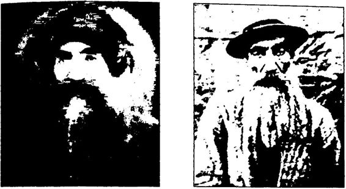
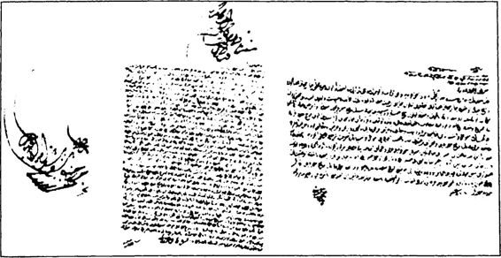

19351940 nüfus sayımları sonuçlarına göre Dersim Harekâtı sonrasında Tunceli’de azalan toplam nüfus 13.084 kişidir. Bu kişilerin 11.683’ü de batıya sevk edildiğine göre geriye Başbakan Erdoğan’ın de diği gibi 13.806 kişi değil, sadece 1401 kişi kalmaktadır. Nerde 13.806, nerde 1401... Arada dağlar kadar fark vardır. Batıya tek bir kişinin sevk edilmediğini düşünsek bile 19351940 arasında Tunceli’de azalan toplam nüfus 13.084 kişidir. Başbakan Erdoğan’ın açıkladığı rakam ise 13.806’dır. Bu durumda Serap Yeşiltuna’nm dediği gibi, “ Ya açık landığı kadar ölüm yoktur ya da kimse iskâna tabi tutulmamıştır.”" Gerçi kimse iskâna tabi tutulmamış olsa bile 19351940 arasında Tunceli’de azalan nüfus rakamı ile Başbakan Erdoğan’ın verdiği ölü nüfus rakamı yine tam olarak birbirini tutmamaktadır. Başbakan Erdoğan’ın verdiği rakama göre 722 kişi fazla çıkmaktadır. Nereden çıktığı bilinmeyen 722 kişi!
Özgür Erdem, Dersim Yalanları ve Gerçekler adlı çalışmasında söz konusu belgeninin gerçeği yansıtmadığını ileri sürmüştür. Erdem’in gerekçeleri de şunlardır:
“Bir belgenin geçerliliği, sadece üzerindeki mühürle ya da devlet arşivlerinde yer almasıyla sağlanamaz. Bir belge sahte olabilir. Bir ra por değil, düşünce ya da tahmin olabilir. Yanlış bir rapor olabilir. Belki de devletin dikkate almadığı, gerçek olmadığını düşündüğü, ancak yine de arşivlediği bir belge de olabilir. Kısacası bir belgede yazılı bilgiler sadece ve sadece devlet arşivlerinde yer alıyor diye doğruluğu sorgulan mayacak bir kutsal metin değildir. Bunu ifade etme ihtiyacı hissettik, çünkü gerek 1937 ve 1938 harekâtının gün gün raporlarını; gerek yerli ve yabancı basındaki yansımalarını, gerekse yabancı devletlerin iç ya zışmalarını incelediğimizde bu belgede yer alan 13.806 ölü rakamına rastlamıyoruz. Belgedeki rakam gerçek olsa, bunun başka kaynaklarda da yansıması olması gerekirdi. Bunu görmüyoruz bu bir.
İkincisi devletin diğer resmi belge ve raporlarında da bu rakamı doğrulayacak herhangi bir başka bilgi bulunmuyor. 13.806 ölü raka mına başka bir belgede rastlamıyoruz. Ayrıca bu belgenin Cumhuriyet Arşivi’nde içinde bulunduğu klasördeki diğer belgelerle tarihinin tut maması belgeyi daha da şüpheli hale getirmektedir...”
Başbakan Erdoğan’ın açıkladığı belge Başbakanlık Cumhuriyet | Arşivi’nin tasnif kurallarına uymamaktadır.
Sonuçta; Başbakan Erdoğan’ın açıkladığı belge 1939 tarihlidir. Ancak, 19371938’de gerçekleşen Dersim Harekâtı’yla ilgili (bu bel geyle birlikte tasnif edilen) diğer Dersim belgeleri 1938 tarihlidir.
Başbakan Erdoğan’ın açıkladığı belgedeki ölü sayısı 19351940 nüfus istatistikleriyle çelişmektedir.
Başbakan Erdoğan’ın açıkladığı belgedeki ölü sayısı, günü gününe tutulmuş Genelkurmay askeri raporların toplamındaki ölü sayısından 45 kat daha fazladır.
Başbakan Erdoğan’ın açıkladığı belgedeki ölü sayısını doğrulayan başka bir “Dersim belgesi” daha yoktur.
Gerçek şu ki: Alternatif tarih adı altında Cumhuriyet düşmanlığı yapanlar bir Dersim masalı uydurmuş ve uydurdukları bu masala hem kendileri inanmış hem de geniş kitleleri inandırmıştır.
Necip Fazıl’m Dersim Masalları Atatürk ve Cumhuriyet düşmanlığıyla Cumhuriyet tarihini ters yüz eden Necip Fazıl’ın belgesiz masallarından biri de Dersim’dir.
Başbakan R. Tayyip Erdoğan, Dersim konusunu Necip Fazıl’ın Son Devrin Din Mazlumları adlı kitabından öğrendiğini bizzat itiraf etmiştir.
Erdoğan, 23 Kasım 2011 tarihli konuşmasında şöyle demiştir:
“Bizim Dersim’le, Dersim Katliamı’yla olan ilgimiz, yeni güncel ve siyasete yönelik bir ilgi asla ve asla değildir. Öyle kitaplar vardır ki hayatınızı değiştirir. Okuduğunuz bir satır, nefes alıp verdiğiniz siirece hafızanızdan çıkmaz. Size burada öyle bir kitap göstermek istiyorum. Necip Fazıl Kısakürek’in ‘Son Devrin Din Mazlumları’, ilk baskısı 1969’da yapılan bu kitap, yakın tarihimizdeki baskını anlatıyor. Ka ranlık sayfalarına bir kapı aralıyor. Bu kitap zaman zaman yasaklandt, toplatıldı. Kimler tarafından biliyor musunuz? CHP ortak yönetimleri tarafından. İşte benim de, benim neslimin de Dersim’le ilk tanışmamız hu eserle olmuştur. ”
Dersim’i Necip Fazıl’ın Son Devrin Din Mazlumları adlı kitabıyla tanıdığını ifade eden Erdoğan şunları söylemiştir: “Üstat Alevi deme miştir. Bakın burası çok önemli. Sayın Kılıçdaroğlu sen niye demiyor sun? (...) Burada üstat Kürt, Ermeni dememiştir. Necip Fazıl, Dersim ve Dersimlileri din mazlumları sınıfına alarak insani trajediyi bize ak tarmıştır.'”
Erdoğan aynı konuşmasında daha sonra da, “ Üstat Necip Faztl, Dersim’deki facianın tarihte bir benzerinin olmadığını ifade ediyor," diyerek Son Devrin Din Mazlumları adlı kitaptan şu bölümü aktar mıştır:
Babalarım arayan ve yanma gitmek istediklerini söyleyen iki masum çocuk Hozat kaymakamı tarafından süngiiletilerek babalarının yanma gönderiliyor. Kendisinin öğretmen ve köy halkıyla alakasız bir şahıs olduğunu iddia ederek, alevler içinden fırlamak isteyen bir genç, kalasla alevlerin içine itiliyor ve karşısında da sigara içiliyor. Bir köy halkı, önce kurşunlanıyor, daha sonra buğday sapları üzerinde yakılı yorv Üstat, faciayı şu satırlarla anlatıyor:
‘Mazgirt Tersem ek nahiyesinin halkı doğranmakta. Merhamet sahiplerinden biri, birle on yaş arasında 20 kadar çocuğu alıp bir de renin içine saklamıştır. Vaziyet birden haber alınıyor. Çocukların öl dürülmeleri emri veriliyor. Fakat bu emri yerine getirebilecek kimse bulunamıyor. En katı yürekliler bile, böyle müdafaasız masumlara si lah kullanamayacaklarını söylemeye mecbur kalıyorlar. Nihayet kara suratlı bir adam bulunuyor ve bir dere içinde titreşe titreşe bekleyen 20 masumun işi bitiriliyor. Murat suyunun, kandan kıpkızıl aktığını görenler olmuştur. Dersim vakasının en büyük mazlumlarından Seyit Rıza’nın hikâyesi ise ayrıca yürek burkucu...’
Necip Fazıl, Başbakan Erdoğan’ı derinden etkileyen Son Devrin Din Mazlumlan’nda “Dersim” başlığı altında yaklaşık 5 sayfa kadar “Dersim faciasını” anlatmıştır.Necip Fazıl şöyle demiştir:
“En aşağı 50.000 Müslümamn kanını ve canını ihtiva etmesi ba kımından, kalın batlarıyla bir harita gibi çizdiğimiz ve şu anda yalnız ana prensip ve manasıyla tespit ettiğimiz bu facianın tarihte bir benzeri gösterilemez.”
Necip Fazıl, şairliğinden gelen söz ustalığını da konuşturarak ta rihi gerçekleri duygu sömürüsüyle kandırıp akıttığı gözyaşlarıyla ıs latarak çarpıtmıştır. Öyle ki yukarıdaki kısa paragrafa bile iki yalan sığdırmayı başarmıştır. Bir: Dersim’de en az 50.000 Müslümamn öl dürüldüğü yalanı. Hiçbir belgede Dersim’de 50.000 kişinin öldürül düğüne ilişkin bir kayıt, bir kanıt yoktur. îki: Bu facianın tarihte bir benzerine rastlanmadığı yalanı. Örneğin, Osmanlı tarihinde Yavuz Sultan Selim’in 16. yüzyılın başlarında 40.000’e yakın Alevi Turkmeni katletmesi Dersim olayından çok daha büyük bir faciadır.
Erdoğan’ın, “İşte benim de, benim neslimin de Dersim’le ilk ta nışmamız bu eserle olmuştur,” dediği Necip Fazıl’ın Son Devrin Din Mazlumları adlı eserinde "Dersim” başlığı altında anlattığı trajik ma sallar şunlardır:
Necip Fazıl, “Ve buna benzer daha neler neler!” diyerek süslemiş tir Dersim masalını.
Peki ama Necip Fazıl, genç Cumhuriyet’in asker, sivil yöneticile rini “gözü dönmüş cani” gibi gösteren bu olayları hangi belgelere, hangi bilgilere dayanarak yazmıştır?
Necip Fazıl’ın 325 sayfalık Son Devrin Din Mazlumları adlı ki tabında tek bir dipnot, tek bir güvenilir belge ve tek kitaplık bir kay nakça bile yoktur. Örneğin Necip Fazıl’ın Dersim masalını anlatırken metin içinde kullandığı kaynaklar şunlardır:
Necip Fazıl, “Dersim faciasında” 50.000 Müslümanın öldürül düğünü iddia etmiştir. Ancak bu rakamı hangi belgeye, hangi bilgiye dayandırdığından da hiç söz etmemiştir.
Şöyle demiştir: “Bir kıvılcım halinde gösterdiğimiz Dersim yangı nının kömürleştirilmiş 50.000 cesedinde, kutup şahsiyetler dışı bir yığın olarak din mazlumluğunun en çarpıcı levhasını seyredebilirsiniz. ”Ne müthiş bir duygu sömürü! “Dersim yangınının kömürleştiril miş 50.000 cesedi...” ve “Din mazlumluğunun en çarpıcı levhası...” Şu edebiyata bakın! Anlatımdaki şu hamasete bakın! Şu mağduriyete bakın! Şu din sömürüsüne bakın! Gerçekten çok etkileyici bir masal! Yersen tabii!
Necip Fazıl’ın Dersim Masallarının Kaynağı:
Nuri Dersimi ve İ. Sabri Çağlayangil “Türkiye Cumhuriyeti Dersim’de katliam yaptı! Yüz binlerce Kürdü katletti!” yalanının temel kaynağı, Kürt Teali Cemiyeti üyesi, Koçgiri, Ağrı ve Dersim isyanlarının elebaşlarından Kürtçü Baytar Nuri Dersimi’dir. Nuri Dersimi, Kürdistan Tarihinde Dersim adlı anı larında, cumhuriyet ve Türk düşmanlığının ve ateşli Kürtçülüğünün etkisiyle olayları iyice abartıp biri bin yaparak anlatmıştır.
İşte Nuri Dersimi’nin kaleminden Dersim masalları:
“Binlerce genç kadın ve kız Türk canavarlarına namuslarını tes lim etmemek için kendilerini Munzur Suyu’na atarak intihar ediyor, Kürtlük şerefi uğrunda ölüyordu. Munzur ve Fırat nehirleri üzerinde günlerce Kürdün bu kutsal şehitlerinin cesetleri yüzüyordu. Bölgeyi top ve uçakların saçtığı zehirli gaz bombardımanları yoğun bir sis ta bakası altına almış, yaşayan hiçbir mahluk kalmamıştı. Yanan evler ve ormanlardan, cehennemi bir görüntü yansıyordu.
Şu satırlar da ona aittir:
*Tiirkler Tujik Dağı eteklerini tamamen işgal etmiş ve buralarda ellerine geçen Kürt halkını merhametsizce öldürmüşlerdi. Tujik Dağı eteklerinden İksor Vadisindeki büyük mağaralara sığınmış olan bin lerce çocuk, kadın ve kızlar, bu mağaraların menfezleri genelkurma yın emir ve murakabesi altındaçimento ile kapattırılmak suretiyle mahvedilmişlerdi. (...)
“Bir zamanlar şen ve neşeli olan Kiirdistan, bugün harabeye dön müş ve baykuşlar yuvası olmuştur. Orda yaşayan bugünün ve gele ceğin Kürtleri baba toprağının her seferinde atalarının masum kanını görecek, Kürt diyarının uçurumlarına ve ırmaklarına baktıkça, onuru için kendini ölüme atan on binlerce Kürt dedelerinin ve bakirelerinin yürek dağlayan feryadı kulağında çatlayacaktır.
İsyancı Nuri Dersimi’nin ruh halini anlamak için onun şu satırla rını okumak yeterlidir:
“İntikam! İntikam! İntikam! İntikam! İntikam! Kürt namusuna sürülen lekeyi temizlemek için intikam! Süngiilenen yüz binlerce Kürt evladının feryadını dindirmek için intikam! Girdaplara atılan, ateşler de yakılan gelin ve kızlarımızın Kiirdistan afakında uğuldayan iniltile rini teskin için intikam!..
Darağaçlarınm altında ölümü kahramanca selamlayan, 'Yaşasın hür ve müstakil Kürdistan!’ diye haykırarak şahadet tacını giyen bin lerce vatan kurbanlarının gayelerini tahakkuk ettirmek için intikam! Kürdistan denilen harabezar (harabe) anayurdun istihlası (kurtuluşu) için intikam! Kürt diyarında uluyan sırtlan ve çakallar ırkının mülev ves (pis) vücutlarından Kürt vatanını tathir (temizlemek) için intikam!
Medeniyet denilen kahpenin peşine sığınarak bize uluyan köpekleri susturmak için intikam!.. İntikam!.. İntikam!..
Şehitlerimizin kanlı cesetleri üzerinde kanla, gözyaşlarıyla yazılı vasiyetname işte bu bir tek kelimedir!.."
Kendinden geçmiş, cezbeye tutulmuş bir meczup misali “intikam! intikam!” diye bağırarak Türklere “kin” ve “nefret” kusan Nuri Der simi aktivist bir Kürtçü olarak kaleme aldığı Kiirdistan Tarihinde Der sim adlı kitabında hayal gücünü de kullanarak gerçekleri altüst etmiş tir. İşte onun altüst ettiği gerçekler, bizim Necip Fazıl gibi Cumhuriyet tarihi yalancılarına kaynak olmuştur.
Necip Fazıl’ın Dersim masallarının kaynaklarından biri de İhsan Sabri Çağlavangil’dir. Başbakan Erdoğan, 23 Kasım 2011 tarihli konuş masında Seyit Rıza’nın idamını anlatırken İhsan Sabri Çağlayangil’in anılarına gönderme yaparak şöyle demiştir: “Dersim vakasının en bü yük mazlumlarından Seyit Rıza’nın hikâyesi ise ayrıca yürek burku cu. Dönemin Malatya Emniyet Müdürü İhsan Sabri Çağlayangil, bir röportajda bunu şöyle anlatıyor. ‘Son sözünü sorduk, kırk liram var, oğluma verirsiniz dedi. Bu sırada Fındık Hafız asılıyordu. Asarken iki kez ip koptu. Seyit Rıza görmesin diye ben arabanın önünü kapattım. Fındık Hafız’ın idamı bitti. Seyit Rıza’yı meydana çıkardık. Soğuktu ve etrafta kimseler yoktu. Ama Seyit Rıza, meydan insan doluymuş gibi sessizliğe ve boşluğa hitap etti: ‘Evladı kerbalayıkh, b 'ı hatayıkh, ayıptır, zulümdür, cinayettir İhsan Sabri Çağlayangil, Dersim Flarekâtı’nın nasıl başladığını anılarında şöyle anlatmıştır:
“Atatürk Singeç Köprüsünü açmaya gidecek. O tarihte Seyit Rıza Dersim’in lideri. Devlet, Fırat üzerine bir köprü yapmış. Köprünün ba şında da bir karakol. Karakolda 33 askerimiz, başlarında İsmail Hakkı adında bir yedek teğmen var. Köprüye Dersimliler saldırı düzenliyor. Karakol yakılıyor ve 33 askerimiz şehit oluyor. İşte bu olay isyanın başlamasıdır. Atatürk olayla ilgileniyor ve kesin talimat veriyor: ‘Bu meseleyi kökünden hallediniz İ. Sabri Çağlayangil’in Atatürk’ün ağzından naklettiği, “Bu mese leyi kökünden hallediniz!” ifadesi uydurmadır. Çağlayangil uyduraca ğı Dersim masalına kılıf hazırlamıştır. Nitekim anılarının devamında Tunceli’de “Kürtlerin katledilerek”, “meselenin kökünden halledildi ğini” belirtmiştir.
İşin ilginç yanı İ. Sabri Çağlayangil Dersim Harekâtı sırasında Tunceli’de değil Ankara’dadır. Dersim Harekâtı bitip Seyit Rıza ya kalandıktan sonra Elazığ’a gitmiştir. Tekrar ediyorum! Harekât sıra sında Tunceli’de değildir. Harekâtla ilgili hiçbir şey görmemiştir. Bunu anlamak için anılarını okumak yeterlidir. Kemal Kılıçdaroğlu’na an lattığı anılarında, Malatya Valisi İbrahim Ethem Akıncı ve Alpdoğan Paşa’nın bazı Tuncelilerle pazarlığına tanık olup döndüğünü belirtmiş tir. Çağlayangil, kendi itirafıyla, harekât sırasında Tunceli’de olma masına rağmen harekâtı görmüşçesine şunları söylemiştir:
"... Sonra biz geri döndük, yeni mehil istendi. Neticeyi söylüyo rum. Bunlar kabul etmediler, mağaralara iltica etmişlerdi. Ordu zehirli gaz kullandı. Mağaraların kapısının içerisinden bunları fare gibi zehir ledi. Ve yediden yetmişe o Dersim Kürtlerini kestiler. Kanlı bir harekât oldu. Dersim davası da bitti. Hükümet otoritesi de köye ve Dersim’e girdi.”
Görüldüğü gibi Tunceli aşiretleriyle yapılan görüşmenin sonuç vermemesinden “sonra biz geri döndükdiyerek Dersim Harekâtı sı rasında Tunceli’de olmadığını bizzat itiraf eden Çağlayangil daha son ra, “Neticeyi söylüyorumdiyerek Dersim Harekâtı’nı Tunceli’dey miş de gözüyle görmüş gibi anlatmıştır.
Turgut Özakman’ın, Çağlayangil’in Dersim masalları konusunda ki şu değerlendirmesi önemlidir:
“Tanık mı? Görevli mi? Hiçbiri değil. Ne? Ankara’da bulunan bir polis. Bunları ne zaman söylüyor? Yıllarca sonra. Tarihe objektif bakan biri midir? Hayır. Doğru Yol Partisi’nin en fanatik yöneticile rinden biridir. Bunların dönemini yaşadığım için biliyorum. Benim ya şımdaki herkes de bilir. Duyduğu propaganda iddialarım, o dönemin iktidarı CHP’yi lekelemek için tekrar ediyor... İddialara göre 50.000 ile 100.000 arasında Tuncelili öldürülmüş...müş. Arttıran arttırana. Bu iddiayı propagandacılarla birlikte İ. Sabri Çağlayangil de tekrar ediyor. Diyor ki: ‘Ve yediden yetmişe Dersim Kürtlerini kestiler. Kan lı bir harekât oldu.’ Tanık mı? Hayır. Görevli mi? Hayır. Orda mı? Hayır: Duyduğunu yansıtıyor. Kime? Genç bir Tuncelili'ye, Kemal Kılıçdaroğlu’na... ”
Çağlavangil, Seyir Rıza'nın idamını (Kılıçdaroğlu’na) şöyle anlat mıştır:
"... (İçişleri Bakam) Şiikrii Kaya çağırdı, dedi ki: ‘Atatürk Sin geç Köpriisü’nü açmaya gidecek, Elazığ’a da uğrayacak. Seyit Rıza ile ilgili mahkeme bitmiş fakat karar tebliğ edilmemiş. Elazığ’da 6000 Kürt toplanmış, Atatürk’ün seyahatini duymuşlar. Atatürk’ten Seyit Rıza'nın affı için şefaat isteyecekler. Yanına sivil adamlarını al git, Ata türk gelmeden önce mahkeme kararı uygulansın da Kiirtlerin Atatürk’e müracaatları ve ricası olmasın,’ dedi. Ben 3S sivil polis aldım yanıma gittim (devamında ses bozuk). Cellat, Çingene buldular infaz için. ‘15 kâğıt isterim. Üçdört de... (anlaşılmadı)... isterim,’ dedi. Hapishaneye gittik. Yedi idam mahkûmu vardı. İçinde Seyit Rıza ve oğlu da var. Biz Elazığ Emniyet Müdürü İbrahim ile Seyit Rıza’yı aldık.
İmam, dini telkin yapmak istedi, Seyit Rıza kabul etmedi. Jandar ma karakolunun önünde bir meydan vardı, orada asılacaklardı. Oraya götürdük. Savcı bir yafta yapıştırdı. ‘Vasiyetin var mıV dedi. ‘Kırk lira param var onu oğluma verin,’ dedi. Halbuki oğlu da asılacak farkında değil... (anlaşılmadı). ‘Başka vasiyetim yok,’ dedi. Beyaz gömlekle çıktı sehpaya; bomboş meydana sanki insan doluymuş gibihitap etti: ‘Biz evladı Kerbela’ytz. Bihatayız. Ayıptır, zulümdür, cinayettir... (anlaşıl madı).”
(...) O şekilde Seyit Rıza artık bitti, kapandı. Yani Dersim’de ki liderler bu şekilde bertaraf edildi. Diğer öbür liderler de Dersim harekâtında hayatlarını kaybettiler. Kürtler üzerinde ağalığa başlaya cak, yeni liderlik yapacak kimse kalmadı. ”
Seyit Rıza’nın Şapkasını Sömürmek 1937’deki I. Dersim Harekâtı sonrasında yakalanan Seyit Rıza, Elazığ’da yargılandıktan sonra 6 isyancıyla birlikte idam edilmiştir. Ancak Seyit Rıza yakalanıp idam edilmeden önce başında bir şapkayla fotoğrafı çekilmiştir. Seyit Rıza’nın bir de idam sehpasındayken fotoğ rafı çekilmiştir.
 Puşili ve şapkalı Seyit Rıza Atatürk, Seyit Rıza’nın bu fotoğrafılarının Cumhuriyet düşmanla rınca istismar edileceğini düşünerek bunların imha edilmesini istemiştir. Çağlayangil’in anılarından okuyalım:
“Bu sırada, ‘Atatürk seni çağırıyor,’ dediler. Gittim, kahvaltı ediyor lardı. Bana bir resim gösterdi. Seyit Rıza’nın sehpada sallanırken resmi çekilmiş. ‘Bu resim ne Emniyet Müdürü?’ dedi. ‘Haberim yok/ dedim.
‘Öyleyse maiyetine hâkim değilsin,’ dedi ve ekledi:
‘Çabuk git, bu resmin negatifini bul, basılanları imha et.’
Gittim, araştırdım. Bizim sivil polisimiz Macar Mustafa, ben idam yerinden ayrılırken resim çekmiş. Bir yerlerde bastırmış ve Şükrü Kaya’nın yaverine vermiş. Şükrü Kaya da Atatürk’e iletmiş. O kısa ko nuşmada anladım ki, Atatürk bu olayları detaylı olarak bilmiyor. Bu tür olayları da sevmiyor. Ve Atatürk demokrat tavırlı bir insan.
Ben hemen negatifleri, basılanları imha ettim. Resimlerden ikisini sakladım. Atatürk’e gittim. Resimlerden birini kendisine uzattım. ‘Em riniz yerine getirildi,’ dedim. ‘Hepsi imha edildi mi?’
Edildi efendim. Yalnız iki tanesini sakladım.’
‘Ne olacak onlar?’
Müsaade ederseniz birini zatı devletlerine vereceğim, birini de kendime alıkoyacağım.’
‘Sen bu resimleri ne yapacaksın ki?’
‘Müsaade ederseniz ilerde anılarımı yazacağım.'
Atatürk, ‘Peki. Bana ayırdığını ver,’ dedi. Verdim. Ve Atatürk, trenden Halkevine hareket etti. Arabasına da binmedi.'"* Yıllardır Dersim duygu sömürüsü yapanlar. Seyit Rıza’nın o şap kalı fotoğrafını göstererek Seyit Rıza’ya o şapkanın “zorla” giydirildi ğini iddia etmiştir. Ancak bu iddia doğru değildir.
Şöyle ki:
Seyit Rıza yakalanınca, “Ben Seyit değilim, bana Seyit demeyiniz. Bey, paşa da yoktur, bana Bay Rıza deyiniz!” diyerek birdenbire dev rim kanunlarını hatırlayıp o kanunlara uymaya karar vermiştir! İşte o sırada bir anda Şapka Kanunu’nu da hatırlamıştır:
Cumhuriyet gazetesine yansıdığı şekliyle:
“Erzincan’a dalalet edince Seyit’in ilk işi zamanı geçmiş bir arzu üzerinde ısrara başlamıştır.
‘Benim şapkam vardı. Kayboldu! Bana iyi bir şapka getirin. Yoksa adım atmam,’ diye ısrar etmiştir. Şapkayı başına geçiren Seyit Rıza, ‘Beni Ankara’ya gönderin,’ dedi. (...) Elaziz’e muvasalatında otomobil Tunceli adliyesi önünde tevakkuf etti. Otomobilden inen Seyit Rıza bitik bir vaziyette kendine çekidüzen verdikten sonra dik ve sert kıl lı kaşlarını çattı, gözlerini kırptı ve yarım dönerek şapkasını arama ya başladı. Başına sarmış olduğu büyük ve ipekli bir puşiyi kendisine uzattılar, almadı, ‘Şapkamı isterim ben. Şapkasız gidemem!’ dedi.”
Görüldüğü gibi yakalanınca “Benim şapkam vardı. Kayboldu. Bana iyi bir şapka getirin. Yoksa adım atmam!” diye ısrar ederek bir şapka isteyen Seyit Rıza, kendisine verilen şapkayı başına geçirmiş, kendisine uzatılan puşiyi almayarak, “Şapkamı isterim ben. Şapkasız gidemem!” diye diretmiştir. Yani yakalandığında Seyit Rıza’nın başı na o şapka zorla giydirilmemiştir. Seyit Rıza, yakalandığında “şark kurnazlığı” yapmış, Şapka Devrimi’ne uygun hareket ederek paçayı kurtarabileceğini düşünmüştür. Ama artık iş işten geçmiştir.
Cumhuriyet düşmanları, Seyit Rıza’nın şapkasını bile sömürmüştür.
Atatürk ve Cumhuriyet düşmanı Necip Fazıl, Son Devrin Din Mazlumları adlı kitabında İskilipli Atıf Hoca idam edildiğinde de ba şına şapka giydirildiği yalanını dillendirmiştir. Şöyle demiştir: “Bir ri vayete göre Atıf Hoca’nın ölü başına şapka geçirmişlerdir!!!” Necip Fazıl, “bir rivayete göre” diyerek söylediği bu yalanının altında kal mak istememiştir. Bu rivayet, yine tescilli bir Atatürk ve Cumhuriyet düşmanı olan Rıza Nur’a aittir. Rıza Nur, Hayat ve Hatıratım adlı anılarında Bu Hoca’mn asılmasında boynuna ip geçirilirken, Kılıç Ali de başına bir şapka geçirmiş, ‘Giy domuz,’ demiş ve küfürler etmiş. Zavallı böyle ölmüş ve böylece saatlerce teşhir etmişler,” demiştir. Hep aynı yalancılar, hep aynı yalanlar, hep aynı duygu sömürüsü! Ah ah!
Devlet Elinden Geleni Yaptı Genç Cumhuriyet, Dersim İsyanı öncesinde Tunceli ve civarına büyük yatırım yapmış, Dersim aşiretlerini isyan etmemeleri için ik naya uğraşmış, 1937 isyanından sonra iki ay harekât yapmayıp ikna çalışmalarına devam etmiş, 1938 harekâtına da isyancıların ilk saldı rısından altı ay sonra başlamış, isyan edip yakalanan veya teslim olan Tuncelililerin cezalarını ertelemiş, asker kaçaklarına af çıkarmış, ya kalanan isyancıların çoğunu tutuklamayıp serbest bırakmış ve Tunceli halkının isyancılarla birlikte olmamasına çalışmıştır.
Devlet, harekât sırasında da sivillerin zarar görmemesi için çaba harcamış, isyancılara yönelik operasyonda isyancıların ailelerine do kunmamış, hatta isyancıların çoluk çocuğu düşünmüş, kadın ve çocuk ların zarar görmemesine çalışmış ve harekât sırasında her iki taraftan da az kayıp verilmesini amaçlamıştır.
Harekât sırasında Tunceli’ye iki yıl içinde toplam 480 km yol ya pılmıştır. Bu yollar sayesinde Dersim Türkiye’ye bağlanarak ticarete açılmıştır. Neşit Hakkı’nın deyimiyle, “azametli binalar”, hükümet konakları, köprüler, kışlalar inşa edilmiştir, köylüye toprak dağıtıl mıştır. Bu yatırımlarla köylü, aşiret hayatından uzaklaşıp “vatandaş” olmaya başlamıştır. O günlerde Elazığ’da yatılı bölge okulu olarak hizmete giren Kız Enstitıisü’nde Elazığ, Tunceli ve Bingöl köylerinden getirilen kız öğrenciler yetiştirilmiştir.
İngiliz askeri ateşe Yarbay A. Ross, 5 Eylül 1938 günü İngiltere’ye gönderdiği 119 nolu kapalı raporunda, harekâtın sona ermesinden 11 gün önceki durumu şöyle anlatmıştır:
“ Türkler şimdi de 3 milyon liralık bir yapım programımı giriştiler.
Biri Tunceli'nin batısından diğeri doğusundan geçip Erzincan'ı Elazığ'a bağlayan ve çeşitli noktalardan birbirine bağlanarak bölgesel bir ula ştın ağı oluşturan iki yolun yapımı sürmektedir. Şu ana dek toplam uzunlukları 684 metre tutan dokuz köprüyle birlikte, 420 kilometre yol yapılmış ve telefon hatlarına 5000 kilometre eklenmiştir. Mareşal Fevzi Çakmak bana, Mansur (veya Murat) Nehri'nin kaynağında bir barajdan muhtemelen hidroelektrik enerjisi de elde edileceğini söyledi. Genelkurmay Başkan Yardımcısına ve diğer Türk subaylarına göre, son derece güzel bir yer olan Tunceli bölgesinin ilerde ‘ikinci bir İs viçre' haline getirilmesi amaçlanmaktadır. Ama bana kalırsa bölgenin erişilmez yapısı ve Türkiye'yi gezen yabancılara çıkartılan güçlükler bu düşün gerçekleşmesini ciddi bir biçimde engelliyecektir. ”
Fevzi Çakmak’ı bilmem ama Atatürk Tunceli’yi gerçekten de “ikinci bir İsviçre” yapmayı düşünmüştür. İleride ayrıntılarıyla anlata cağım gibi “Tunceli Islahat Projesi”nin asıl amacı budur.
15.000 Silah Genç Cumhuriyet’in bütün iyi niyetli çabalarına karşın Tunce li’deki 6 aşiret Seyit Rıza’nın liderliğinde isyan etmiştir. 19371938’de Tunceli’de eli silahlı bir eşkıya grubu vardır. Resmi kayıtlara göre, 4 Ekim 1937 tarihine kadar Tunceli’den 4076 tüfek, Erzincan’dan 786 tüfek ve Bingöl’den 126 tüfek olmak üzere toplam 4991 tüfek toplan mışnr. Silah arama çalışmaları bundan sonra da devam ettirilmiştir. Bütün harekât boyunca toplanan tüfek sayısı 5000’in çok üzerindedir.Milet Meclisi’nin 7 Temmuz 1939 tarihli toplantısında Dahiliye Vekili Faik Öztırak, “Dersim mıntıkasından şimdiye kadar toplanan silahların adedi 14.593’tiir. Bu silahların hepsi son sistemdirdemiştir.
Görülen o ki, Tunceli’de 15.00020.000 isyancının elinde 15.000’e yakın silah vardır. Genç Cumhuriyet’in bu derece çok silahlanmış bir eş kıya grubuna karşı askeri harekât yapması son derece doğal ve doğru bir karardır. Bu kadar silahlı bir gücün hem Türkiye Cumhuriyeti’ne hem de bölge halkına karşı ciddi bir tehdit olduğu yadsınamaz.
Türkiye Cumhuriyeti hükümetini Dersim Harekâtı sırasında kat liam yaptırmakla, Türk ordusunu katliam yapmakla suçlayanlar, asır lardır Kürtlerin kanını emen bazı aşiretlerin Ağrı ve Dersim isyanları sırasında Kürtleri acımazsızca katlettiklerini hep gizlemiştir.
İngiltere Dışişleri Bakanlığı gizli belgeleri arasında bulunan 22 Mayıs 1937 tarihli bir belgede,“Sayılarının 1500’iin üstünde olduğu söylenen Kürt asilerinin Türk kuvvetlerine ciddi kayıplar verdirmeye devam ettiği ve ellerine düşen subayların vücutlarını vahşice parçala dıkları.belirtilmiştir.
Ağrı İsyam’nın elebaşı Huske Telli, kendi ailesini kendi elleriyle kurşuna dizmiştir. Garo Sasuni, Hayrenik dergisinin Kasım 1929 sa yısında yayımladığı, 1969’da Beyrut’ta, 1986’da Stokholm’de Türkçe olarak basılan Kürt Ulusal Hareketleri kitabında şöyle demiştir:
“En büyük lider Huske Telli şu teklifi sunuyordu: Biitiin kadınlar, güçsüz ihtiyarlar ve çocuklar kılıçtan geçirilsin ki, arkalarındaki bütün köprüleri yakmış olan devrimci güçler, son neferinin son nefesine ka dar savaşsınlar. Ve bir devrimci gaddarlığı içinde Huske Telli, bu planı ilk önce kendi aile ve akrabalarına uygulayarak, Ağrı tepelerinde bir trajedi manzarası ortaya serdi. Bütiin nüfuzlu liderler ve şeyhler yaşlı gözlerle Ağrı Aslanı ndan bu ümitsiz kırıma bir son vermesini rica edi yorlardı. Huske Telliyi yumuşatmaya muvaffak olduklarında, zaten Î0 kadar günahsız, bağımsızlık ocağının alevlerine kurban gitmişti. Bu gaddar plan böylelikle uygulanamadı.”'
Ağrı İsyanı bastırıldıktan sonra Türk ordusu, Ağrı tepelerinde öldürülmüş kadın ve çocuk cesetleriyle karşılaşmış, fakat isyancılar, bütün dünyaya, “Türk ordusu kadınlarımızı çocuklarımızı öldürdü!” propagandası yapmıştır. Allah’tan dünya bu propagandayı ciddiye almamıştır.
Cengiz özakıncı’ya kulak verelim:
“Bu gibi aşiret içi olayların yalnızca Ağrı İsyanı’yla, Huske Telli örneğiyle sınırlı olup olmadığı, aşiretlerin insan ve yurttaş haklarına karşı ayaklanma tarihlerinde bu türden başka ‘kendi kendisinin soyu nu kırma’ uygulamalarının görülüp görülmediği ve bu davranış biçi minde, aşiretlerin, aşiretler arası çatışmalarda karşı aşiretin kadınla rını, çocuklarını öldürmeyi gelenek edinmiş olmalarının bir etkisinin bulunup bulunmadığı ayrı bir araştırma konusudur. Bu gibi aşiret ‘gaddarlık’larını, ‘devrimci’ sözcüğüyle birleştirip ‘devrimci gaddar lık’ diye bir deyim uydurarak ‘devrimcilik’i lekelemek, gerilikçi aşiret isyanlarına ‘ilerici’, ‘ulusal ayaklanma’ yaftaları yapıştırarak bunları kutsamak, tenekeyi altın yapmaya yetmeyeceği gibi, bu gibi çabalar, aşiret yasalarında ‘insan ve yurttaş hakları’nın kırıntısının dahi bulun madığı gerçeğinin üstünü örtmeye de yetmemektedir.
19371938 Dersim İsyanı’na katılanlardan Şeyh Hasanlı Aşire ti’nin, yüzyıllar boyu madenlere saldırarak, sayısız maden emekçisini topluca öldürdüğü, maden işçileri madende çalışmaktayken onların köylerini basıp savunmasız kadınlarını, çocuklarını topluca katlettiği, köylerini yaktığı, mallarını yağma ettiği, paralarını çaldığı Osmanlı Arşiv Belgeleriyle kanıtlı bir gerçekliktir. Sözüm ona ‘emekten, emek çiden yana’, ‘sol’ gösterip ‘sağ’ vuran etnik ayrılıkçı kimi odakların, Dersim’i değerlendirirken, Şeyh Hasanlı gibi isyancı Dersim aşiretle rinin reislerini ‘devrimci’(!) buna karşılık Atatürk’ü ve dönemindeki Türkiye Cumhuriyeti’ni ‘soykırımcı’, ‘karşı devrimci’ olarak damgala yan yayınların çoğalarak sürdüğünü görüyoruz.”
Dersim Harekâtı sırasında aşiret hesaplaşmaları nedeniyle za man zaman kelleler kesilmiştir. Dersim duygu sömürüsü yapanlar bu kelleleri devletin kestiğini ileri sürmüştür. Ancak kelleler aşiretler ce kesilmiştir. Örneğin Dersim İsyanı’nın fikir babalarından Alişer, Suriye’ye kaçmak üzereyken 9 Temmuz 1937’de saklandığı mağarada Seyit Rıza’nın yeğeni Rehber tarafından yakalanmıştır. Amcası Seyit Rıza’yla arazi anlaşmazlığı nedeniyle kavgalı olduğundan isyana katıl mayıp devlete yardım eden Rehber, Alişer’i öldürüp kellesini keserek orduya teslim etmiştir. Yine isyancı liderlerden Şahin de üvey kardeşi Pirço tarafından öldürülüp kellesi kesilerek orduya teslim edilmiştir.
Dersim İsyanı sırasında kesilen kellelerden biri de Hızır Ağa’nmdır. Onun kellesini de Seyit Rıza’nın karısı Besi kestirmiştir.
Dersim Harekâtı sırasında üç aşiret mensubu Alişer, Şahin ve Hı zır Ağa’nın kellelerini kesenler yine Kürt aşiret mensuplarıdır. Türk ordusu Dersim Harekâtı sırasında yakaladığı veya teslim aldığı hiç bir isyancı liderin kellesini kesmemiştir. Devlet, isyancıları mahkeme de yargılamış, yargılamalar sonunda suçsuz olanları salıvermiş, suçlu olanları ise idam etmiştir. 1937’deki I. Dersim Harekâtı sonunda sade ce 7 isyancı idam edilmiş, diğerleri serbest bırakılmıştır.
19. yüzyıldan bugüne; Şeyh Hasanlı aşiretlerinin Osmanlı madenci lerini kadın, çoluk çocuk demeden katletmesinden, Huske Telli’nin Ağrı İsyanı’nda kendi ailesini yok etmesine ve PKK elebaşı “bebek katili” Apo’nun 1983’ten bugüne 30.000 Mehmetçiği şehit etmesine kadar, ta rihte birçok “aşiret kıyımı”, birçok “Kürtçü vahşet” örneği vardır.
Tunceli’de Acılar Yaşandı Abartılı ve temelsiz iddiaları bir kenara bırakıp konuya belgeler ışığında soğuk kanlı bir şekilde yaklaştığımızda Dersim Harekâtı sıra sında gerçekten de insanların öldüğünü, bazı acıların yaşandığını gör mekteyiz. İnsan hayatı kutsaldır ve bırakın 2000, 3000, 5000,10.000 kişiyi, tek bir kişinin ölmesi bile çok acı bir olaydır. Ancak maalesef, tarih boyunca savaşlar ve isyanlar sırasında dünyanın her yerinde in sanlar ölmüştür, ölmektedir ve ölecektir.
Evet! 19371938 Dersim Harekâtı sırasında insanlar ölmüştür, ölenlerin çoğu isyancı olsa da ölenler arasında az sayıda bazı “siviller”, “suçsuz insanlar” da vardır. Her savaşta, her çatışmada, her büyük toplumsal olayda olduğu gibi “yanlış” yapanlar da vardır!
Harekât sırasında direnen ve silaha sarılan köylerin yakıldığı askeri raporlarda açıkça belirtilmiştir ve bu raporlar Genelkurmay tarafından yayımlanmıştır. Ancak köyler, içindeki isyancılarla, insanlarla birlik te değil, boşaltıldıktan sonra isyancılar bir daha geri dönüp o köylere yuvalanmasınlar diye yakılmıştır. Nitekim 4 Mayıs 1937’de Bakanlar Kurulu’nun aldığı Dersim Harekâtı kararında şöyle bir bölüm vardır:
"Mülahaza: Sadece taarruz hareketiyle ilerlemekle iktifa ettikçe isyan ocakları daimi olarak yerinde bırakılmış olur. Bunun içindir ki silah kullanmış olanları ve kullananları yerinde ve sonuna kadar zarar veremeyecek hale getirmek, köyleri kamilen tahrip etmek ve aileleri uzaklaştırmak lüzumu görülmüştür...”
Görüldüğü gibi hükümet, hareket sırasında isyancı köyleri boşalta rak tahrip edecektir. Gerçekten de bazı köyler boşaltılıp yakılmıştır. Karar verildiği şekilde buralardaki insanlar ise batıya sevk edilmiştir. 1937 ve 1938 Dersim Harekân sırasında içleri boşaltılan köylerin yakıldığı askeri raporlarda açıkça belirtilmiştir. Örneğin 14 Haziran 1938 tarihli bir ra porda şöyle denilmiştir: “Mameki Dağ Tugayı bölgesinde normal devam eden faaliyetler arasında 1. Seyyar Jandarma Taburu ndan ağır makineli tüfekle takviyeli bir müfreze Aşağı ve Yukarı Rotsan, Dergever köylerini aramış ve yakmıştı. 17. Tümen de aynı şekildeki faaliyetler arasında Hor mik, Diztaş, Hemzik Uşağı hattının batısında 15 kadar köyü yaktı.”Biraz önce de ifade ettiğim gibi Dersim Harekâtı sırasında zaman zaman ölçü kaçmış, insanlar zarar görmüştür. Rıza Zelyut’un Dersim İsyanları ve Seyit Rıza Gerçeği adlı kitabında yazdığı şekliyle; “Dersim’de acılar yaşanmıştır, bu doğrudur. Dersim halkının Alevi olması, bazı bürokratların ve bazı subayların burada zülüm derecesin de işler yapmasına yol açmış görünmektedir. Bunun belgesi yoksa da o zamandan kalan anı kırıntılarında bu gerçeği yakalamak mümkündür. Bu hatıraların; tıpkı öldürülen insan sayısı gibi abartılarla dolu olduğu kabul edilebilir. Lâkin bazı mağaralardaki insanların öldürüldüğü, is yancı aşiretlere ait köylerde ele geçirilen bazı sivillerin de kurşuna dizil diği bir gerçektir. Bu yanlıştır, insaf dışı bir kırımdır. Dersim’dekı bazı Osmanlıcı subaylar, geçmişin intikamını almak, bunları bir daha ayağa kaldırmamak gibi bir niyetle hareket etmiş gibi gözüküyorlar.
Olayın bir de devlet tarafından görülen yüzü vardır. II. Dünya Savaşı'na giden bir dünyada Hatay sorunu ve Boğazlar konusuyla uğ raşan Türkiye Cumhuriyeti, yeni düzeni Dersim bölgesinde de egemen kılacaktı. Ülkenin diğer yerlerinde olduğu gibi burada da eskiyle yeni nin savaşı yaşanmıştı.
Buralarda öldürülen sivil halkın sayısının 100.000 olmasını bırakın 100 tane olması bile onaylanamaz. Fakat yapılan askeri çarpışmadır. Bu çarpışmanın düzenli iki ordu savaşı olmadığı, gerilla savaşı veren tarafın bastırılması sırasında böyle zayiatların ortaya çıktığı bir gerçektir. Ve kı rılan Dersim’in suçsuz insanları olmuş, bu kırımı hazırlayanlardan, tarih önünde Dersimliler hesap sormayı düşünmemişlerdir.
İşin tek olumlu yanı şudur: Bu operasyon, Dersim bölgesindeki katı aşiret reisliğini ve ağalık sistemini çökertmiş, bölge insanını özgiir leştirmiştir. Bugün Tunceli insanının en çağdaş değerlere açık olma sının, aklı ve bilimi savunan bireyler haline gelmesinin sebeplerinden birisi, Tunceli’nin devlet eliyle derebeylerden temizlenmesidir.”
Evet, özellikle 1938’deki II. Dersim Harekâtı sırasında Tunceli’de bazı acıların yaşandığı, insanların öldüğü doğrudur. Ancak Türk ordu sunun isyancılar dışında bilerek sivil insanları öldürdüğü, kadın, çoluk, çocuk Kiirtleri katlettiği tamamen yalandır, iftiradır, çirkin bir pro pagandadır. Bu konudaki “uç örnekler” bu tür bir harekât sırasında dünyanın her yerinde olabilecek türdendir.
Dersim Harekâtı’nda Zehirli Gaz Masalı Başbakan Erdoğan, 23 Kasım 2011 tarihli konuşmasında "... İşte bu kanunun ardından, hazırlıklar yapılıyor, 1937, 1938 ve 1939 yıl larında D ersim’de maalesef büyük bir dram yaşanıyor. Havadan, ka radan, toplarla, hatta gaz bombalarıyla, Dersim’de hareket eden her şey, çocuklar, kadınlar katlediliyor...” demiştir. Yani Erdoğan, 1937 ve 1938’de Tunceli’de “zehirli gaz” kullanıldığını iddia etmiştir.
Dersim Harekâtı sırasında zehirli gaz kullanıldığı iddiası da Dersim isyancısı Nuri Dersimi ile Dersim Harekâtı sırasında Tunceli’de olmadı ğı halde harekâtı oradaymış gibi anlatan İ. Sabri Çağlayan’a aittir.
Nuri Dersimi, Kürdistan Tarihinde Dersim adlı kitabında şöyle demiştir:
“... Bölgeyi top ve uçakların saçtığı zehirli gaz bombardımanları yoğun bir sis tabakası altına almış, yaşayan hiçbir mahluk kalmamıştı. Yanan evler ve ormanlardan, cehennemi bir görüntü yansıyordu... ”İ. Sabri Çağlayangil de anılarında, Dersim Harekâtı’nda “... Ordu zehirli gaz kullandı. Mağaraların kapısının içerisinden bunları fare gibi zehirledi...” demiştir.
Ancak Nuri Dersimi ve İ. Sabri Çağlayangil yalan söylemiştir.
Kürtçü Nuri Dersimi’nin propaganda amacıyla kaleme aldığı Kiirdis tan Tarihinde Dersim adlı kitabındaki “zehirli gaz” masalını İ. Sabri Çağlayangil de anılarında tekrarlamıştır.
Ancak Dersim Harekâtı’nda Türk ordusunun “zehirli gaz” kul landığı iddiası tamamen yalandır. Çünkü hem Türkiye’nin o tarihlerde zehirli gaz üretimi yoktur hem de yabancı ülkelerden henüz zehirli gaz alınmamaktadır.''
Cengiz Özakıncı, Bütiin Dünya dergisinin Haziran 2012 sayısında “İngiliz Devket Arşivinden Gizli Belgelerle Kanıtlıyoruz: Dersim’de Zehirli Gaz Kullanılmadı” başlıklı yazısında İngiliz arşivlerinde bul duğu iki belgeye dayalı olarak 19371938 Dersim Harekâtı’nda zehirli gaz kullanılmadığını kanıtlamıştır.
“BELGE 1: 24 Mayıs 1938Tiirkiye, İngiltere'den zehirli gaz sa vaşı konusunda uzman istiyor.
BELGE 2: 911 Ocak 1939İngiltere, Türkiye'nin 24 Mayıs 1938’de istediği 'Zehirli Gaz Savaşı' uzmanının en erken 1939 Nisan ayından sonra Türkiye'ye gönderebileceğini bildiriyor. ”Bu belgeleri paylaşan Özakıncı şu yorumu yapmıştır:
“Dünyada ve Türkiye’de ilk kez şimdi yayımladığımız bu belgeler, 19371938 yıllarında Türkiye'de, zehirli gaz ve de zehirli gazın silah olarak nasıl kullanılacağı konusunda uzman kimsenin bulunmadığını Türkiye’nin ilk kez 1938 yılının ortalarında İngiltere'ye başvurararak zehirli gaz savaşı konusunda İngiliz uzman isteminde bulunduğunu; İngiltere’nin Türkiye’yi 1939 yılı ortalarına dek oyaladıktan sonra, bu istemi 1939 yılı ortalarında kabul ettiğini göstermektedir.”
"Sonuç: Dersim’de zehirli gaz kullanılarak soykırım yapıldığı” ileri sürülen 19371938 yıllarında, Türkiye’nin elinde zehirli gaz ol madığı gibi, zehirli gazın silah olarak nasıl kullanılacağını bilen uzman da yoktur. ‘Dersim Harekâtı’nda zehirli gaz kullanıldığı’ suçlama sı; uydurmadır. Bu belgelerden sonra bir daha Türkiye Cumhuriyeti Devleti’ni, Atatürk’ü, İsmet İnönü’yü, Celal Bayar’ı, Fevzi Çakmak’ı, Abdullah Alpdoğan'ı, Dersim’de zehirli gaz kullanmakla suçlayacak olanlar; iftira suçunu işlemiş olacaklardır. ”
910 Ocak 1939 tarihli belge: İngiltere zehirli gaz uzmanını en erken 1939 Nisan ayından sonra gönderebileceğini belirtiyor2
Görüldüğü gibi Türkiye’nin 1939 Nisan ayının sonuna kadar ne zehirli gazı ne de o gazın nasıl kullanılacağını bilen teknik elemanı var dır. Dolayısıyla 1937 ve 1938 Dersim Harekâtı’nda Tunceli’de zehirli gaz kullanıldığı kocaman bir yalandır.
Buna rağmen Nuri Dersimi ile İ. Sabri Çağlayangil’in “zehirli gaz” yalanma dört elle sarılan Cumhuriyet karşıtı “yandaş medyamız” sa
balı akşam bu zehirli gaz masalım tekrar etmektedir. Örneğin 2011 yı lında Radikal gazetesinde yayımlanan Dersim konulu bir yazı dizisinde “Dersim’de Gaz Kullanıldı” başlığıyla İ. Sabri Çağlayangil’in anlattık larına ve 1947 tarihli bir İngiliz belgesindeki sübjektif “kanaate” da yanılarak hükümetin Dersim Harekâtı sırasında zehirli gaz kullandığı iddia edilmiştir.
Şöyle demiş Radikal:
“Dersim ile ilgili en ciddi iddialardan biri zehirli gaz kullanıldığı dır. Çağlayangil açık açık gaz kullanıldığını söylemişti. İngiliz belgeleri de gaz olayını doğruluyor.
Dersim katliamıyla ilgili ilk defa CHP Genel Başkanı Kemal Kılıçdaroğlu’nun o dönem Malatya Emniyet Müdürlüğü’nde görevli olan İhsan Sabri Çağlayangil ile yaptığı bir röportajda gündeme ge len ‘gaz kullanıldı’ iddiasını İngiliz belgeleri de doğruluyor. İngiliz Arşivleri’nde bulunan ve ilk kez Radikal’in yayımladığı bu belgede or dunun ‘savaş uçağı ve gaz’ kullandığı öne sürülüyor. 17 Ocak 1947 tarihini taşıyan ve İngiltere’nin Ankara Büyükelçiliği tarafından İngil tere Dışişleri Bakanlığı’na yollanan Dersim ile ilgili üç sayfalık raporda şunlar yazılı: ‘Uçakların kullanıldığı, inanıyorum ki gaz da kullanıldı, insafsız operasyonlardan sonra silah taşıyabilecek nüfusun çoğunluğu Anadolu’nun diğer ücralarına nakledildi...”* Bakın Atatürk Cumhuriyetiyle kavgalı Radikal, gerçekleri nasıl da ustalıkla çarpıtıyor!
Güya Dersiırile ilgili en ciddi iddialardan biri zehirli gaz kullanıl dığıymış! Ancak bu nasıl bir ciddiyetse, bu iddiayla ilgili, üstelik o sı rada Tunceli’de olmayan İ. Sabri ÇağlayangiPin bir cümlesi ve isyancı Nuri Dersimi’nin uydurmaları dışında tek bir “kanıt” yok.
“İngiliz belgeleri de bu gaz olayını doğruluyor!” diyen Radikal, “belgeler” diyor, ama harekâtın gerçekleştiği 1937, 1938 yıllarına ait tek bir İngiliz belgesinde bile “zehirli gaz” ifadesine rastlayamadığı için operasyondan yıllar sonra, 1947 yılında yayımlanmış bir İngiliz rapo rundaki sübjektif bir “kanaati” bize belge diye yutturmaya çalışıyor. 1947 tarihli İngiliz belgesinde, raporu hazırlayan Ankara’daki İngiliz Büyükelçiliği Basın Ataşesi W. E. D. Allen’in “... İnanıyorum ki gaz da kullanıldı!” ifadesi hiçbir kesinliği olmayan bir “inanç”, bir “kana at” olmasına karşın “liberal” Radikal kendisinden bekleneni yapıp bu
inancı, bu kanaati, “İngiliz belgelerinin gaz olayını doğruladığı” şek linde vererek Cumhuriyet karşıtlığı adına gerçekleri çarpıtıyor! Yersen tabii!
Ayrıca zehirli gaz kullanmak I. Dünya Savaşı’ndan sonra 1925 Cenova Protokolleriyle yasaklanmıştır. Buna rağmen üç ülke; 1939 1945 arasındaki İL Dünya Savaşı’nda Avrupa’da Almanlar, 1935’te Habesiştan’da İtalyanlar, İ937’de de Çin’de Japonlar zehirli gaz kul lanmışlar bu nedenle de Avrupa ve dünyada çok aşağılanmalardır.
Çok daha önemlisi, 1937 ve 1938 Dersim Harekâtı’nın olduğu dönemde “devrimler. Boğazlar, Hatay olayları ve Atatürk nedeniyle Türkiye gündemde bir ülke. Tunceli’ye yakın birçok konsolosluk var. İngiliz haber alma ağı her yana uzanmış durumda. Türkiye zehirli gaz kullanacak ve dünya ayağa kalkmayacak! Dünya gazetelerine düşer, lanetlenirdik, rezil olurduk. (...) Bu zehirli gaz masalını bir yana bırak mak aklın gereğidir.”
Bu nedenle Başbakan Erdoğan’ın 23 Kasım 2011 tarihinde (...) Havadan, karadan, toplarla, hatta gaz bombalarıyla, Dersim’de hare ket eden her şey, çocuklar, kadınlar katlediliyor...” şeklindeki sözleri gerçeği yansıtmamaktadır.
Tunceli’de Katliam Olmuş Dünyanın Haberi Yok 1937, 1938 Dersim Harekâtı’yla ilgili arşiv belgeleri, Genelkur may kaynakları incelendiğinde Dersim Harekâtı’nın tamamen isyancı lara yönelik “meşru” bir harekât olduğu görülmektedir. Bu harekâta “katliam” demek için hiç kimsenin elinde yeterli delil yoktur. Res mi belgeler dışında dönemin iç ve dış basını tarandığında da Dersim Harekâtı’mn “katlim” olduğuna ilişkin hiçbir kanıta, hatta hiçbir iddi ya rastlanamamaktadır.
Dersim Yalanları ve Gerçekler adlı kitabın yazarı Özgür Erdem, “Dönemin gazete arşivlerinin tümünü taradık. Ulus, Akşam, Cumhu riyet, Kurun, Son Telgraf ve Tan gazetelerini satır satır inceledik. Bir katliamla ilgili ne bir haber ne de bir fotoğraf var. Bırakın böyle bir haberi, katliam olduğuna ilişkin bir ima bile yok. Bölücü koro bu du rumıı ‘basma sansür vardı’ diyerek açıklamaya çalışıyor,”™* diyerek iç basında Dersim Harekâtı’nın “katliam” olduğuna ilişkin basınımıza yansımış tek bir satır olmadığını ifade etmiştir.
Bizim basınımıza “sansür” uygulanmıştır! Bu nedenle “Dersim katliamıyla ilgili bizim basınımıza değil dünya basınına bakın, diye bilirsiniz!
Öğür Erdem, Amerikan basınında da Dersim Harekâtı’ndan hiç bir yazıda ve haberde “katliam” diye söz edilmediğini şöyle ifade et miştir:
“Amerikan gazetesi New York Times’ın arşivini taradık. Dersim İsyanıyla ilgili iki haber bulabildik. Yazılar, 17 ve 20 Haziran 1937 tarihli. Anlaşılan İnönü’nün 14 Haziran’da Mecliste yaptığı konuşma nın ardından haberler yapılmış. Yazılarda isyanın bastırıldığından ve Sabiha Gökçen’in kahramanlığından bahsediliyor. İki yazıda da isyanı bastırma harekâtında toplam 5000 kişinin öldüğünün iddia edildiği söyleniyor. Bu iddiayı kimlerin yaptığına ilişkin herhangi bir kayıt yok. Ancak 17 Haziran tarihli haberde bir iki paragraf sonra toplam isyancı sayısının da 5000 olarak verildiğini görüyoruz. Kısacası 5000 isyancı nın tümünün öldürülmesi gibi mantık sınırlarını zorlayan bir haberle karşı karşıyayız. (...)
Amerikan basınında New York Times gazetesinde 1938 yılında da Dersim ile ilgili 1937’de olduğu gibi sadece iki tane haber var. İkisi de Sabiha Gökçen’in Balkanlar’da uçakla yaptığı iyi niyet turuyla ilgili. Haberlerde Gökçen’in Dersim İsyanı’nın bastırılması harekâtının kah ramanlarından biri olduğu anlatılıyor. Yani Dersim İsyanı Amerikan basınına Sabiha Gökçen vesilesiyle yansımış...”
Sadece Amerikan basını mı? İngiliz basınında da hiçbir “katliam” izi yok.
Prof. Bilal Şimşir İngiliz basınında hiçbir haberde ve yazıda Der sim Harekâtı’ndan “katliam” diye söz edilmediğini belgelerle ortaya koymuştur. Örneğin İngiliz The Times gazetesinin 16 ve 17 Haziran 1937 günlü sayılarında Dersim İsyanı’nın “eğitim öğretime karşı ko yan”, “reformlara direnen” aşiretlerce çıkartıldığı duyurulmuştur.
İngiliz gizli belgelerinde de Dersim Harekâtı’nın “katliam” oldu ğuna ilişkin tek bir belge, tek bir bilgi, tek bir rapor yoktur.
Bilal Şimşir İngiliz arşivinde yaptığı araştırmalar sonunda Dersim Harekâtıyla ilgili şu belgelere ulaşmıştır:
İsyanın başladığını bildiren raporlar. Bu raporlar 17 Mayıs, 22 Mayıs ve 23 Mayıs 1937 tarihli üç rapordur. Bu raporlarda “sözde katliam” hakkında tek bir satır bile yoktur.
İsyanın niteliği ve hükümetin tutumunu anlatan raporlar: Bu ra porlar 16, 17 Haziran ve 3, 16 Temmuz tarihli dört rapordur. İlk iki rapor Dersim Harekâtı hakkında İnönü’nün Meclis’te yaptığı konuş mayı takip eden günlerde hazırlanmıştır. Genel olarak dört raporda da Dersim Harekâtı’yla ilgili basın haberleri özetlenip Seyit Rıza’nın yakalanmasıyla isyanın sona ereceği anlatılmıştır.
Örneğin, 16 Temmuz 1937’de İngiliz Büyükelçisi Loraine’in Londra’ya bildirdiği raporda Dersim konusundaki son gelişmelerden şöyle söz edilmiştir: “General Apldoğan, ayaklanmayı bastırırken aynı zamanda Tunceli’de halkı yatıştırmak için idari önlemleri başlatması için tam yetki almıştır. Kış aylarında harekâta ara verilecek fakat asker bölgede kalacaktır. Halka karşı merhametli davranılacaktır. General’in gözetimi altında Milli Eğitim ve Bayındırlık Bakanlıkları görevlileri ta rafından Dersim’de kalkınma hamlesi başlatılmıştır. Buradaki inşaat işlerinde görevli olan Bayındırlık Bakanlığı müfettişlerinden birinin verdiği bilgilere göre köprü yapımı gibi işlerde Dersimli işçiler de çalış tırılmaktadır. Bunlar zeki, çalışkan ve iyi işçiler olarak kendilerini ka nıtlamışlardır. Bölgeyi yatıştırma işi gelecek yıl tamamlanacaktır.”İngiliz askeri ataşesi Doğu Anadolu’daki askeri durumu değer lendirdiği 23 Mayıs 1937 tarihli raporunda Dersim İsyanı ve harekâtı hakkında şu bilgileri vermiştir:
“Türk hükümetinin ve Genelkurmayının şu sırada iki kaygısı var: Biri Suriye sınırı, diğeri Dersim. Mardin yöresinde eşkıyalık baş göstermiştir. Eşkıyanın Suriye ve îrak’tan geldiği sanılıyor. Bu çete leri Suriye kışkırtmış olabilir. Hatay sorunu halledilince bu eşkıyalık biter. Dersim’de ise büyük çapta bir ayaklanma var. Askeri makamlar harekât için hazırltk yapıyor. (...) Suriyelrak sınırında ortaya çıkan eşkıyalığın Dersim Ayaklanmasıyla bağlantısı olabilir. Dersimliler sa nırım Hatay sorunu halledilmeden ayaklanmaya karar vermişler. Sayı ları 1500 kadar olan asiler 8 Mayıs’ta hükümet kuvvetlerine ciddi za yiat verdirmişlerdir, ayaklanma bu saldırıyla başlamıştır. (...) Dersim'e karşı operasyonlar Erzincan’dan yönetilecek. Erzincan 9. Kolordu’ya bağlı 3. Piyade Tümeni’nin karargâhıdır. Bu tümen takviye edildi ve Diyarbakır’daki hava birliğinin uçaklarıyla desteklenecek.. .”
1937 isyanının sona erdiğini anlatan rapor: 20 Kasım 1937 tarihli bu raporda Seyit Rıza ile diğer 6 isyancının idamından söz edilmiştir. Raporda Katliamı çağrıştıracak ne bir bilgi ne de bir belge vardır. An kara’daki İngiliz Ataşesi Yarbay A. Ross, 31 Ağustos 1938’de Elazığ’a giderek Abdullah Alpdoğan Paşa ile görüşmüştür. Bu görüşmeden he men sonra Büyükelçilik Maslahatgüzarı Morgan’a bir rapor yazmıştır. A. Ross’un Morgan’a gönderdiği 5 Eylül 1938 tarihli raporda 1938 isyanının nasıl bastırıldığı ve isyanın bastırılmasından sonra Tunceli’de başlayan tahmini 3 milyon Sterlin değerindeki imar çalışmalarından söz edilmiştir. Raporda Türk yetkililerin bu çalışmaların ardından Tunceli’nin “ikinci bir İsviçre” haline geleceğini ümit ettikleri belir tilmiştir. Raporda 1938 Dersim Harekâtı’nın katliam olduğuna ilişkin hiçbir ifade yoktur. Sadece bir yerde iki taraftan da çok sayıda ölünün olduğu belirtilmiştir. Raporda Elazığ’da yaralı Türk askerlerine rastla nıldığı da ifade edilmiştir.
İngiliz Büyükelçiliği’nin Türkiye 1937 Yıllık Raporu’nda da Der sim İsyanı ile ilgili şu değerlendirmelere yer verilmiştir:
“Türk Genelkurmayı Mayıs ve Haziran aylarında Dersim ayak lanmasıyla uğraştı. Bu geri bölgeye geçten geç uygulanmaya başlanan reformlara karşı pasif direniş 8 Mayıs’ta ayaklanmaya dönüştü. Ge nelkurmay Başkanı Mareşal Fevzi Çakmak, Jandarma Genel Komu tanı Ahmet Naci Tınas ile birlikte 8 Mayıs günü Elaziz’i ziyaret etti. Buradaki 7. Kolordu’nun 17. Tümeni asilerin üstüne sevk edildi. İs yan bölgesi batıdan, kuzeyden ve doğudan kuşatıldı. Erzincan’daki 9. Kolordu’nun 3. Piyade Tümeni ve uçaklar da harekâta katıldı. Toplam 7000 tüfek, 162 hafif makineli ve 80 ağır makineli tüfek, 6 hoıvitzer topu ve 15 uçak. Bu kuvvet 12 May ıs’ta Elaziz’den hareket etti. Asiler fazla direnemedi. Kırmızı dağa çekildi. Askerin buraya hücum edebil mesi için Mansur Nehri üzerine 200 fit uzunluğunda bir köprü kurmak gerekiyordu. 19 Mayıs’ta havadan da desteklenen 25. Piyade Alayı, Komünist Rusya’ya göre de Dersim Harekâtı’na bir “katliam” ya pılmamıştır.
Komünist Enternasyonalin yayın organı “Rundschau”, 29 Tem muz 1937 günlü sayısında, Dersim’de yaşananları özetle şöyle duyur muştur:
“İki ayı aşkın bir zamandan beri Ankara hükümeti, Dersim bölge sindeki Kürt aşiretlerin yeni bir gerici ayaklanmasını bastırmakla uğra şıyor. Ağalar, kendi yönetim ve yargı yetkileri altında bulunan ahali den işlerine geldiği gibi vergi alıyor. Bölge gençlerinin büyük bir kısmı, askere gidecek yerde, aşiret reislerinin muhafız birliklerine fedai olarak giriyor. Bugün, Kemalist hükümetin enerjik reformları yüzünden kendi iktidarlarını tehdit altında hisseden feodal unsurların ümitsiz bir di renişiyle karşı karşıya bulunuyoruz. İsyanın arifesinde, tapu kadastro idaresi, aşiret reislerinin elinde bulunan halka ait malların incelenmesi ve saptanmasına ilişkin hükümet önlemlerini uygulamaya başlamıştı. Bu durumda feodalizm, kendi yasadışı egemenliğinin iktisadi temelleri ni yitirme tehlikesiyle karşı karşıya bulunduğunu hissetti. İşte, özellikle bu önlem, isyana yol açan neden olmuştur. ”
Sovyetler Birliği’ne göre Dersim’de “gerici bir isyan” meydana gelmiştir ve Türkiye Cumhuriyeti bu “gerici isyanı” bastırmaya çalış mıştır. Koministlere göre Dersim İsyanı, “Kemalist hükümetin enerjik reformları yüzünden kendi iktidarlarını tehdit altında hisseden feodal unsurların ümitsiz bir direnişinden” başka bir şey değildir.
İstanbul’daki Amerikan Büyükelçisi G. Hovvland Shavv’in, ABD Dışişleri Bakanlığfna gönderdiği 25 Haziran 1937 günlü rapora göre Amerikan Büyükelçisi’nin Dersim İsyanı’na bakışı da şöyledir:
“Bölge halkının geri kalmışlığı problemin temel hatlarını oluş turmakta. Yöre halkı, yollar, köprüler, okullar vs. yapılmasına karşı koyuyor. En son ayaklanma, hükümetin bölgenin sosyal ve ekono mik koşullarım iyileştirmek üzere geliştirdiği reform programım daha önce elde edilmiş haklara tecavüz şeklinde gören liderleri tarafından başlatıldı. General Alp doğan, aşiret reislerini Erzurum’da toplayarak, onlara hükümetin bölgede yol ve diğer şekillerde girişeceği iyileştirme programını tanıtmıştı. Aşiret reisleri bu görüşme sırasında dostane ve anlayışlı göründüler, fakat toplantıdan sonra bölgede sahip oldukla rı egemenliğin elden gitmesi tehdidi karşısında dönüş yolları üzerinde yer alan bütün köprüleri havaya uçurdular ve hükümete bir ültimatom göndererek; ancak bölgede jandarma bulundurulmaması, yeni köprü lerin yapılmaması, bölgenin devlet kuramlarıyla donatılmaması, silah larının ellerinden alınmaması, vergilerin karşılıklı görüşmelerle belir lenmesi koşuluyla Türkiye Cumhuriyeti Devleti ile anlaşabileceklerini bildirdiler. Aşiret reislerinin bu ültimatomu üzerine, bölgeye askerler gönderildi ve aşiret reislerine karşı savaş başlatıldı. ”
Amerikan Biiyükelçisi’ne göre de Dersim isyan etmiştir. Amerika’ya göre Dersim İsyanı, “Hükümetin bölgenin sosyal ve ekonomik koşul larım iyileştirmek üzere geliştirdiği reform programını daha önce elde edilmiş haklara tecavüz şeklinde gören liderleri (Seyit Rıza) tarafından başlatılmıştır”.
Görüldüğü gibi Sovyet, Amerikan ve İngiliz istihbaratı ve bası nı söz birliği etmişçesine Tunceli’de bir isyan olduğunu ve Türkiye Cumhuriyeti’nin bu isyanı bastırmak için meşru bir operasyon gerçek leştirdiğini ifade etmiştir. Yabancı raporlarda, yazışmalarda ve yabancı basındaki yazılarda, haberlerde Dersim Harekâtı sırasında bir “katliam” yapıldığına ilişkin tek bir belge ve belgeye dayalı ciddi bir bilgi yoktur. Da hası yabancı basın ve istihbarat, hükümetin Tunceli’yi her bakımdan kal kındırmak için çalışmalar yaptığını bütün ayrıntılarıyla ortaya koymuştur.
Dünyanın Gözleri Önünde Haziran 1938’de başlatılan II. Dersim Harekâtı, Ağustos 1938’de Türkiye’deki bütün yabancı ülke askeri ataşelerinin çağırıldığı ve gelip izledikleri “3. Ordu Tunceli Askeri Manevralarıyla birleştirilmiş ve tüm dünyanın gözleri önünde gerçekleştirilmiştir. Askerlerin Tunceli dağlarında, mağaralarında isyancı arama tarama çalışmaları, yabancı ülkelerin askeri ataşeleriyle gazete muhabirleri tarafından notlar alına rak, fotoğraflar çekilerek izlenmiştir.
Büyük arama tarama 10 Ağustos 1938 sabahı başlamıştır. 3. Kolordu’nun harekete geçmesiyle bir hafta süren arama tarama çalışma ları 17 Ağustos’ta sona ermiştir. Birlikler 31 Ağustos’ta büyük bir geçit töreni yapmıştır. Manevranın ikinci bölümü 6 Eylül’de başlayıp 16 Ey lül 1938’de sona ermiştir. Bu sırada Tunceli’nin bütün dağlan, dereleri, tepeleri, mağaraları, yabancı devlet görevlilerinin gözleri önünde adım adım taranmış, çatışmalar da yabancıların gözleri önünde olup bitmiştir.
1937’deki I. Dersim Harekâtı’nda olduğu gibi, 1938’deki II. Der sim Harekâtı’nda da bir yandan isyancılarla çatışılırken, diğer yandan aşiret üyelerini “özgür çiftçilere” dönüştürecek toprak dağıtımıyla ba yındırlık çalışmaları sürdürülmüş ve sonunda isyan tümüyle bastırı lırken, Tunceli’de Cumhuriyet’in amaçladığı “eşit yurttaşlık” düzeni kurulmuştur.
Sonuçta Dersim Harekâtı dünyanın gözleri önünde olmuştur. Eğer bu harekât sırasında gerçekten bir “katliam” yapılmış olsaydı, hiç şüpheniz olmasın Türkiye dünyanın diline düşer, “katliamcı” diye aşağılanır, suçlanır, uluslararası camiadan dışlanırdı.
Dersim İsyan Etmemiştir İddiası Başbakan R. Tayyip Erdoğan, 23 Kasım 2011 tarihli konuşma sında, '‘‘‘Dersim’e yapılan operasyonlar bir isyanın bastırılması olarak zihinlerde meşrulaştırılmaya çalışılıyor. (...) Dersim’de, adım adım çer çevesi çizilmiş, bahaneleri hazırlanmış bir operasyon var,” demiştir. Erdoğan bu sözleriyle Tunceli’de bir isyan olmadığını, adım adım ha zırlanmış bir operasyon olduğunu iddia etmiştir.
Erdoğan’ın, “Dersim isyan etmemişken hükümet Dersim’e ope rasyon yapmıştır!” tezinin kaynağı da üstadı Necip Fazıl’dır. Necip Fazıl, Son Devrin Din Mazlumları adlı kitabında aynen şöyle demiştir:
“ Dayandığı tek sebep birtakım asayişsizlik ve itaatsizlik bahane si altında bütün Doğu Anadolu’yu kapsayıcı olarak, o mıntıkanın bir türlü sulandırılamayan koyu İslami rengidir.”
Dersim’in İsyan Tarihçesi Dersim sözcüğü, Farsça “der” (kapı) ve “sim”, (gümüş) sözcük lerinin birleşmesinden oluşur; der(kapı)+sim(gümüş) = “gümüş kapı”, “maden kapısı” veya “maden yöresi” anlamına gelmektedir.
1935’te Dersim’in yeniden yapılandırılma tasarısı Meclis’te tar tışılırken, Şükrü Kaya’nın Dersim için türettiği “Munzur” sözcüğünü beğenmeyen Atatürk, Dersim’in yerine “Tunçeli” sözcüğünü türetmiş tir. Der+sim= “maden yöresi”, Tunç+eli= “tunç yöresi”...
Bu durum, Cengiz Özakıncı’nın dediği gibi, “Atatürk’ün Osmanlı top dökümünde kullanılan ‘tunç’un yöredeki bakırdan elde edildiğini bildiği ve buradaki aşiretlerin yüz yıllar boyunca çevredeki bakır ma denlerine saldırıp, Osmanlı’nın tunç top üretimini baltalayarak askeri çöküşüne yol açtıklarının bilincinde olduğunu gösteriyordu. ”
“Nasıl yani?” dediğinizi duyar gibiyim! O zaman gelin şimdi hep birlikte Dersim’in bilinmeyen “isyan tarihçesine” şöyle bir göz atalım.
Öncelikle şunu belirtmeliyim ki, Osmanlı’nın yükselmesinin arka sında Dersim vardır! Evet, yanlış okumadınız! Osmanlı’nın önleneme yen fetihlerinin ve askeri zaferlerinin arkasındaki teknik gücün kaynağı Dersim’dedir!
Dersim, Osmanlı’nın patlayıcı silah üretimi için gereksindiği mad de ve madenlerin sağlandığı bölgelerin tam merkezinde yer almıştır. Patlayıcı silahların icat edilmesinden sonra Dersim, bu silahların üre timi için gerekli madenlerden yoksun fakat bu madenlerin bulunduğu yerlerin tam ortasında bulunduğundan hep çok önemli olmuştur.
Osmanlı’nın top, gülle, mermi üretiminde kullandığı demir, ba kır, kurşun vb. madenlerle, barut yapımında kullandığı güherçile, odun kömürü ve kükürt, hep Dersim’e komşu yörelerde çıkartılmış ve başta İstanbul olmak üzere çeşitli yerlerde kurulan “tophane” ve “baruthane”lerde işlenmiştir. Osmanlı’nın para basımında kullandı ğı bakır ve gümüşün önemli bir bölümü de yine Dersim çevresindeki maden ocaklarından çıkartılmış ve başta İstanbul olmak üzere çeşitli yerlerde kurulan “darphane”lerde işlenerek gümüş “akça” ve bakır “mangır”a dönüştürülmüştür.
Osmanlı’nın askeri başarılarının arkasında, “mermi” ve “barut” yapımında kullanılan madenlerden çok iyi yararlanılması vardır. Bu nedenle Osmanlı maden bölgelerinde yaşayanlara bazı ayrıcalıklar ta nımış, “madenciyan fukarası” adı verilen maden işçileri için ayrı yasal düzenlemeler çıkarmış, “maden kanunnameleri” hazırlamış ve maden çiler arasındaki anlaşmazlıkları, başında “Maden Emini”nin bulundu ğu özel bir yargı düzeniyle halletmiştir. Osmanlı, birbirine yakın maden bölgelerini tek bir Maden Emini'nin yönetiminde birleştirmiştir. Örne ğin, tam ortasında Dersim’in bulunduğu Ergani, Gümüşhane, Keban, Kığı, Kemah madenleri, tek Maden Emini’nin yönetimi altındadır.
Maden yataklarının merkezinde bulunan Dersim işte bu nedenle Osmanlı için her dönemde çok önemli olmuştur.
Bu gerçeği fark eden Dersim aşiretleri, yaşadıkları bölgenin bu özelliğinden yararlanmak için sıkça Osmanlı’ya karşı isyan etmişlerdir. Dersim aşiretleriyle Osmanlı arasındaki AleviSünni ayrımı bu isyanla rı daha da şiddetlendirmiştir. Cengiz Özakıncı’nın dediği gibi, “Maden demek, silah demek; top, tüfek, gülle demek; gümüş ‘akça’ ve ‘bakır’ mangır demekti. Çaldıran Savaşı’fidan sonra Osmanlı Devleti, ne za man doğudaki komşuları Rusya ya da İran’la savaşa tutuşacak olsa, siyasal Aleviliğin, Kızılbaşlığın dağlar ve akarsularla korunaklı kalesi Dersim’in önde gelen kimi aşiretleri, Osmanlı nın top, tüfek ve para üretiminin kaynağı olan çevredeki madenlere saldıracaktı. ”
Osmanlı Devleti, 1514, 15341535, 15481549, 15521554, 15781590, 16031611, 16151618, 16221639, 17231727, 1730 1732, 17351736, 18211823 tarihlerinde Alevi, Şii, Kızılbaş İran Devleti’yle savaşmıştır. Bütün bu savaşlarda, Sünni Osmanlı’nın yerli top, tüfek, barut üretimi, kimi AleviKızılbaş Dersim aşiretleri tarafın dan, yöredeki madenlere yapılan silahlı baskınlarla, saldırılarla kesin tiye uğratılmıştır.
Cemal Şener, Dersim Tarihi adlı kitabında Başbakanlık Osmanlı Arşivi (BOA) belgelerine yansımış olan Dersim aşiretlerinin “maden saldırılarını” ve “isyanlarını” şöyle sıralamıştır:
1729 Aralık: “Kimi aşiretler Keban maden bölgesinde Besni ilçe sini basmış, beş yüz emekçiyi esir alıp eşlerine, çocuklarına mallarına saldırmış; halk evini, işini, köyünü terk edip başka yörelere kaçmaya başlamıştır.” (BOA Cevdet Zabtiye, no 1983)
1732 Mayıs: “Dersimli, Şeyh Hasanlı aşiretleri, Keban maden bölgesi emekçilerinin köylerini basarak çocuk ve kadınlarını rehin al mıştır.” (BOA Cevdet Zabtiye, no 1697)
1733 Eylül: “ Der simli, Şeyh Haşarılı aşiretleri, Elazığ, Çarsancak, Kığı madenleri yöresinde halka saldırarak varlıklarını yağma etmiş ve kadın çocuk ayırmadan öldürmüşlerdir.” (BOA Cevdet Dahiliye, no 16543)
 1745 ve 1751 tarihli Osmanlı arşiv belgeleri 1745 Temmuz: Dersimli, Şeyh Hasanlı aşiretleri Kiğı ve Keban madenlerinde çalışan madencilerin yollarını kesip soyarak öldürmek tedirler.” (BOA Cevdet Zabtiye, no 2047)
1751 Ocak: “Dersimli, Şeyh Hasanlı aşiretleri Keban madenine gerekli kömürü sağlamakla yükümlü Çarsancak köylerini basarak, köylüleri öldürmüş, mallarını yağma etmiş, köylerini yakmıştır. Ke ban, Kiğı, Kemah maden eminliklerine bu çapulculukları önleme buy ruğu verilmiştir.” (BOA Cevdet Zabtiye, no 2047)
1761 Temmuz: “Ergani madeninde çalışan emekçilerin köyüne saldıran kimi aşiretler tüm evleri yağmaladıkları gibi çocuk ve kadın lara saldırıp ırzına geçmişlerdir.” (BOA Cevdet Zabtiye, no 4520)
1762 Eylül: “Herdi Aşireti, Keban maden işletmesi emekçilerine saldırıp sormuştur." (BOA A. E. Dahiliye, no 3120)
1764 Aralık: "'Dersindi, Şeyh Hasanlı aşiretleri, çevredeki maden lere saldırıp işgal etmiş, işçileri madenden kaçırtmıştır." (BOA Cev det Zabtiye, no 3639)
1774 Ekim: “Keban ve Ergani madenlerinde devlet egemenliği ye niden kurularak madenlere bağlı kazaların halklarına eski ayrıcalıkları yeniden verilmiştir." (BOA Cevdet İktisat, no 476)
1780 Ağustos: “Dersindi, Şeyh Hasanlı, Güvanlı, Haranlı, Kıı vanlt, Zirkanlı, Diiçekli, Koçgiri, Keme, Şadili, Giireşli, Benamlı, Baz gelii aşiretleri, maden işletmelerinin bulunduğu Gümüşhane, Kurtıçay, Ktzucan, Kemah, Gercanis, Çemişgezek, Eğin, Erzincan ve Tercan il çelerinin madenlerde çalışan halka sürekli olarak saldırıp, can, mal ve namus güvenliğini yok etmeleri üzerine, maden emekçileri işlerini, ev lerini, köylerini bırakıp göçe başlamışlardır. ” (BOA Cevdet Dahiliye, no 5657)
1782 Ocak: “Dersindi, Şeyh Hasanlı, Giivanlı aşiretleri, maden lerde çalışan Kurtıçay (İliç), Kiğı, Ktzucan ilçe ve köylerini basarak mal ve cana zarar vermişler (BOA Cevdet Zabtiye, no 1094), Ekim ayında Keban ve Ergani madenlerine saldırmışlardır(BOA Cevdet Dahiliye, no 11512)
1787 Mayıs: “Dersimli, Şeyh Hasanlı, Döçek aşiretleri, Keban madenine bağlt Çemişgezek, Çarsancak, Eğin, Gümüşhane, Kemah, Kurtıçay, Tercan, Erzincan dolaylarında madenlere ve maden emekçi lerine yönelik sürekli saldırılarda bulunmuş, köylerini yakmış, maden emekçilerini toplu göçe sürüklemişlerdir. (BOA Cevdet Zabtiye, no 3484). Elebaşıları bir süre sonra yakalanıp cezalandırılmıştır.” (BOA Cevdet Zabtiye, no 576)
1787 Eylül: “Dersimli, Şeyh Hasanlı, Düçek aşiretleri, Keban ve Ergani madenlerine bağlı Çarsancak, Çemişgezek, Şirturuk Karaçor, Herbulut, Çermik, Eğil, Palu gibi bütün sancak ve kazalara saldırmış lardır." (BOA Cevdet Dahiliye, no 13821).
1793 Ocak: “Dersimli, Şeyh Hasanlı, Düçekli ve Ovacıklı aşiret leri, Çemişgezek, Çarsancak ilçeleri halkına yönelik saldırılarını yo ğunlaştırmışlardır.” (BOA Cevdet Dahiliye, no 13821).
1798 Aralık: “Dersimli, Şeyh Hasanlı, Düçek aşiretlerinin, ma denler bölgesinde süregelen adam öldürme, soygun, gasp, yağma, ırza tecavüz, köy yakma eylemlerine karşı önlemler pekiştirilmiştir. ” (BOA Cevdet Dahiliye, no 15197).
1809 Ekim: “Toplu öldürmeler, ırza tecavüzler, gasp, ilçe ve köy yakma eylemleri, Keban ve Ergani madenlerinde üretimin durmasına yol açmış; Palu, Harput, Çarsancak, Çemişgezek, Eğil, Malatya, Arab kir, Eğin, Keban, Ergani maden yönetimleri saldırganların peşine düş müştür.” (BOA Cevdet Dahiliye, no 7133).
Arşiv belgelerinde açıkça görüldüğü gibi Dersim aşiretleri, Osmanlı’nm Dersim civarındaki madenlerden yararlanmasını engelle mek için 18. ve 19. yüzyıllarda defalarca isyan etmişler; maden işçileri ne ve bölge halkına saldırmışlar; kadın, çoluk çocuk demeden ellerine geçirdikleri herkesi katletmişlerdir.
Osmanlı Devleti, Dersim aşiretlerinin bu isyan ve saldırılarını ön lemek için çok çaba sarf etmiştir. Örneğin Osmanlı’nın, 18451849 arasında Dersim Ovacık’ta bir askeri kışla yaparak aşiret yapışım da ğıtmaya yönelik idari ve siyasi girişimleri, asi Dersim aşiretlerinin tep kisiyle karşılaşmıştır.
Osmanh’nın bölgedeki önlemlerine karşı 1851 yılında Dersim aşiretleri bir kere daha isyan etmişlerdir. Bu isyanın bastırılmasından sonra padişaha sunulan raporda, “Dersim’de birkaçı dışında çoğu aşi retin silahlarının toplandığı, fakat yerleşik yaşama geçmelerinin zaman alacağı” bildirilmiştir. (BOA, İrade Meclisi, Vala, no 8431)' İsyancı Dersim aşiretleri 17. Yüzyıla kadar “İran’ın maşası” durumundayken, 19. yüzyıldan itibaren önce Rusya’nın, sonra da İngiltere’nin maşası durumuna gelmişlerdir.
18771878 OsmanlıRus Savaşı’nda bazı Dersim aşiretleri, Rusya’nın yanında yer almak için Erzurum’daki Rus konsolosuna tek lifte bulunmuştur.
18771878 OsmanlıRus Savaşı sırasında bazı Dersim aşiretleri o bölgedeki Türk kışlalarına, Türklere ve bazı illere saldırmıştır.
18771878 OsmanlıRus Savaşı’nda Dersim’deki Kırgan Aşireti, Hozat’ı basarak halkı gasp etmiştir.
1892’de Dersim’deki Koç ve Şam uşakları birleşerek büyük grup lar halinde azgınca etrafa saldırmıştır.
18931905 arasında Dersim’de zaman zaman büyük karışıklıklar çıkmış, Arapkir ve Kemah halkı can ve mallarım korumak için Saray ve Babıali'ye şikâyet dilekçeleri göndermiştir.
Bütün bu belge ve bilgiler, Cumhuriyet döneminde 19371938’ deki Dersim İsyanı'nın “Son Dersim İsyanı” olduğunu kanıtlamakta dır! Anlaşıldığı kadarıyla “Dersim’in asayişsizlik tarihçesi” bir hayli gerilere gitmektedir.
1896’da Osmanlı yönetimi, Dersim aşiretlerinin “başı bozuk lukları”, halka yönelik saldırıları, “yağma” ve “katliamları” üzerine Dersinvle yakından ilgilenmeye başlamıştır. Saray, Babıali, Anadolu Genel Müfettişi Müşir Şakir ve 4. Ordu Komutanı Zeki Paşa arasında ki yazışmalardan sonra Dersim hakkında bazı kararlar alınmıştır. Bu kararlardan beşincisi, “D er simlilerin cidden ıslahı için alınması gere ken önlemler” adım taşımaktadır:
1896 tarihli bu 5. karardaki önlemlerden bazıları şunlardır:
1896 tarihli bu kararlardan çok açık bir şekilde görüldüğü gibi Dersim, sadece Cumhuriyet döneminde sorun olmaya başlamamış, Os manlı döneminde de çok ciddi bir sorun olmuştur.
19. yüzyılda bazı Dersim aşiretlerinin yağma, saldırı ve isyanları Osmanlı yöneticilerini Dersim ve civarında acil önlemler almaya yö neltmiştir. 1896 tarihli kararlara göre Dersim’e yönelik alınması düşü nülen önlemler; bölgeye ordu sevk etmek, aşiretlerin birleşmesini önle mek, halka iş imkânları sağlamak, devlete yönelik muhalefete müsaade etmemek, asileri sürgünle cezalandırmak, bölge yönetimini sivillerden alıp askerlere vermek, yer yer sıkıyönetim ilan edip, sıkıyönetim mah kemeleri kurmak, eğitim düzeyini arttırmak biçiminde sıralanmıştır ki, Dersim’e yönelik benzer önlemler, Cumhuriyet döneminde de günde me gelmiştir.
Dersim’deki karışıklıkların artması üzerine Osmanlı Devleti, Der sim’deki asayişsizliklere karşı alınması gereken önlemler konusunda bölgeye araştırmainceleme heyetleri göndererek raporlar hazırlatmıştır.
Osmanlı döneminde “Doğu ve Dersim” konusunda hazırlanan raporlar şunlardır:
Osmanlı Devleti, hu raporlardaki önlemleri uygulamasına kar şın Dersim’deki “eşkıyalık” ve “isyan” bir türlü bitmek bilmemiştir. Bunun üzerine Osmanlı Devleti 1907’de, 1908’de, 1909’da, 1911’de, 1912’de ve 1916’da Dersim’deki isyancı aşiretler ve eşkıyalar üzerine askeri harekât düzenlemiştir." Ancak peşi sıra girilen savaşlar nede niyle bu harekâtlar sonuçsuz kalmıştır.
1937193S’deki Son Dersim Harekâtı’na kadar bölgeye JOO’den fazla sefer düzenlendiğini iddia edenler olmuştur. Örneğin Tan gaze tesinin 11 Ağustos 1937 tarihli sayısında “Boşa Çıkan 108 Seferden Sonra Dersim” başlıklı bir haber yayımlanmıştır. Haberde Dersim’in dağlık yapısı ve aşiretlerin silahlı gücü nedeniyle isyanların bir türlü bastırılamadığı iddia edilmiştir.
Demek ki neymiş? Dersim’e askeri harekât düzenleyen sadece Genç Cumhuriyet değilmiş, Osmanlı da kesin olarak tespit edebildiğinize göre tam 6 kez Dersim’e askeri harekât düzenlemek zorunda kalmış...
Dersim’in İlk Provası Koçgiri 19371938’deki Dersim İsyam’nın habercisi 19201921’deki Koç giri İsyanı'dır; Kurtuluş Savaşı yıllarındaki Koçgiri, Cumhuriyet döne mindeki Dersım’in ilk büyük provasıdır/ Koçgiri İsyanı (Ekim 1920, Haziran 1921), Sevr Antlaşması’na göre Anadolu’da önce özerk, sonra bağımsız Kürdistan kurmayı amaçlayan Kürt Teali Cemiyeti’nin çalışmaları sonucunda patlak vermiştir.
Kürt Teali Cemiyeti sekreteri Alişer Bey, Ekim 1920’de etrafına topladığı 150 kişilik bir çeteyle Kemah çevresinde soygunlara başla mıştır. TBMM, Alişer’in bozgunculuğuna son vermek için Haydar ve Alişan beyleri Alişer’in üzerine göndermiştir. Bu sırada TBMM Hay dar ve Alişan beyleri devlette görevlendirmiştir: Alişan Bey Refahiye kaymakam vekilliğine, Haydar Bey de Ümraniye bucak müdürlüğüne atanmıştır. Ancak çok geçmeden Ümraniye Bucak Müdürü Haydar Bey, Ümraniye’de Kürt Teali Cemiyeti’nin bir şubesini kurmuş, Re fahiye Kaymakam Vekili Alişan Bey ise, İngilizlerle sıkı diyalog içine girmiştir.
Atatürk, Kürtleri de Milli Hareket’in etrafında toplamak için bazı Kürt aşiret liderlerini TBMM’ye davet etmiş, bu sırada Alişan Bey’e de milletvekilliği teklif etmiştir; ancak Alişan Bey bu teklifi reddetmiştir.
Koçgiri İsyanı, etnik bölücülük yaparak bağımsız Kürdistan kurmak isteyen İngiliz işbirlikçisi ayrılıkçı Kürtçülerce çıkarılmıştır. Nitekim isyancıların hazırladıkları Kürdistan bayrağı ve Kürdistan marşı bunun kanıtıdır. Koçgiri İsyanı’na katılanların ellerinde yeşil kırmızıbeyaz renklerden oluşan Kürdistan bayrağı, ağızlarında ise, “Kürdistan in orduları/ Kahrettiler barbarları/ Vatan için öleceğiz/ İs temeyiz Moğolları” sözlerinden oluşan Kürdistan marşı vardır.
Kürt Teali Cemiyeti, Baytar Nuri’yi (Dersimi) Sivas’a, Alişan Bey’i ise Dersim’e göndermiştir. Daha sonra Baytar Nuri, Sivas’ın Zara, Div riği ve Kangal ilçeleriyle, İmraniye, Beypınar, Celalli, Sincan, Hamo, Zınara ve Domurca bucaklarında; Alişan Bey de Dersim’de Kürt Teali Cemiyeti’nin şubelerini kurmuşlardır.
Baytar Nuri, Sivas’ın Kangal ilçesinin Yellice bucağında Hüseyin Abdal Tekkesi’nde yaptığı toplantıda, bölgedeki ayrılıkçı aşiretlere Sevr Antlaşması’na uygun olarak bir Kürt devleti kurulması düşüncesini ka bul ettirmiştir. Baytar Nuri, bu toplantıyı bir Alevi tekkesinde yapa rak, Alevi Kürtlerin de isyana katılmalarını sağlamaya çalışmıştır.
Koçgiri İsyanı öncesinde, Dersim’in Hozat ilçesinde de bazı Kürt aşiretleri arasında Hozat toplantısı yapılmıştır. Refahiye Kaymakamı Vekili Alişan Bey yanındaki 100 adamıyla birlikte Dersim’e gelerek bu rada Çemişgezek ve Hozat aşiretleriyle yaptığı toplantıda isyandan söz etmiştir. Dersim ileri gelenlerinden Seyit Rıza bu toplantıya katılmamış tır, çünkü onun Hozat aşiretlerine hiç güveni yoktur. Toplantı sonun da Baytar Nuri’nin babası İbrahim Ağa’nın hazırladığı bir bildiriyle Kürt aşiretleri TBMM’ye isteklerini iletmişlerdir. Bu bildiri, bölgenin ileri ge tenlerinden Miço Ağa tarafından, Ankara’ya ulaştırılması için Dersim mutasarrıfına verilmiştir. Miço Ağa, bildiriyi verirken Dersim mutasar rıfına, "Bu isteğimize yirmi dört saat zarfında cevap gelmediği takdirde bu parmaklarımla senin gözlerini çıkartırımdemiştir.
Ankara’ya gönderilen 15 Kasım tarihli bildirideki ayrılıkçı Kürt istekleri şunlardır:
Baytar Nuri’nin babası İbrahim Ağa’nın hazırlayıp Miço Ağa’nın Ankara’ya gönderdiği bu bildiriden sonra Batı Dersim aşiret liderleri adına 25 Kasım’da TBMM’ye bir bildiri daha gönderilmiştir. Bu bildi ride TBMM şöyle tehdit edilmiştir:
“Sevr Antlaşması gereğince Diyarbakır, Elazığ, Van ve Bitlis il lerinde bağımsız bir Kürdistan kurulması gerekiyor. Bu nedenle bu oluşturulmalıdır. Yoksa bu hakkı silah zoruyla almaya mecbur kala cağımızı beyan ederiz. ”
Anadolu’nun emperyalistlerce kuşatıldığı bir ortamda, ayrılıkçı Kürt aşiretlerinin bu istekleriyle sarsılan TBMM, bölgeye nasihat he yetleri göndererek ve bazı Kürt aşiret liderlerine milletvekilliği teklif ederek isyan ortamını dağıtmaya çalışmıştır. TBMM’nin bu hamleleri kısmen sonuç vermiş ve Miço Ağa, Diyap Ağa, Ahmet Remzi ve Bin başı Haşan Hayri milletvekili olmuşlardır.
Bazı Kürt aşiret liderlerinin ayrılıkçı Kiirtlere “ihanet ederek” Ankara’ya gidip TBMM’ye katılmaları üzerine birdenbire ayrılıkçılar arasında Seyit Rıza ön plana çıkmıştır. Adamlarıyla birlikte köyünden çıkarak Dersim’e giden Seyit Rıza, Sivas’taki isyancılara gidecek yardımı organize etmeye başlamıştır. Bütün plan ve programı da hazırlamıştır: Kış atlatılır atlatılmaz bağımsızlık ilan edilecektir. İsyancılardan Baytar Nuri, bu planı şöyle açıklamıştır: “İlk önce Dersim’de Kiirdistan istiklali ilan edilecek. Hozat’a Kürdistan bayrağı çekilecek. Kürt milli kuvveti, Elazığ, Malatya istikametinden Sivas’a doğru hareket ederek Ankara hü kümetinden resmen Kürdistan istiklalini tanımasını isteyecek.”
İsyanın yeni önderlerinden Seyit Rıza, TBMM’ye katılan Kürt mil letvekillerinin Dersim’i temsil etmediklerini, çünkü Doğu Anadolu’da bir Kürt yönetimi kurularak bağımsızlığın ilan edildiğini bildirmiştir.
Bu sırada Dersim’deki ayrılıkçı aşiret liderleri üzerindeki bas kısını artıran TBMM, Baytar Nuri’yi tutuklamıştır. Baytar Nuri’nin tutuklanmasına isyancı aşiretler büyük tepki göstermişlerdir. Seyit Rıza, Baytar Nuri’nin hemen serbest bırakılmasını, aksi halde hiç za man kaybetmeden Dersim’den Sivas’a saldıracaklarını bildirmiştir.'Bir taraftan Yunan ilerleyişi, diğer taraftan da iç isyanlarla uğraşan TBMM, yeni bir isyanı göze alamayarak Seyit Rıza’nın isteğini kabul edip Baytar Nuri’yi serbest bırakmıştır. Bu arada Dersim mutasarrıfı da tehdit edilerek bölgeden uzaklaştırılmış ve bölgenin tüm hâkimiyeti aşiretlerin eline geçmiştir.
Alişan Bey’in girişimleriyle toplanan kuvvetlerin başında bulu nanlar arasında Alişer de vardır. İlk aşamada Dersim’den yola çıkan yaklaşık 2500 kişilik kuvvet Kemah üzerinden Kuruçay’a ulaşmıştır. İsyancılar yolları üzerindeki Türk köylerini yağmalayarak birçok kişiyi öldürmüşlerdir.
İsyan ateşi iyice yükselmeye başlayınca TBMM, 10 Mart’ta, Ela zığ, Divriği ve Zara’da sıkıyönetim ilan edilmesine ve Sivas’ta bir sıkı yönetim mahkemesi kurulmasına karar vermiştir.
TBMM, 13 Şubat tarihli Bakanlar Kurulu kararıyla Merkez Or dusu Komutanı Nurettin Paşa’yı Koçgiri İsyam’nı bastırmakla görev lendirmiştir.
Nurettin Paşa’nın komutasındaki, Topal Osman takviyeli Merkez Ordusu, 11 Nisan 1921’de isyancıların üstüne yürümüştür.
Buna karşın Alişan Bey, 26 Mart’ta Pülümür aşiretlerine yazdığı bir mektupta Kürdistan’m bağımsızlığından söz ederek bunun, büyük devletlerce de kabul edilmiş olduğunu hatırlatmıştır.
Alişer ve arkadaşları da 8 Nisan 1921’de TBMM’ye bir mektup göndererek, “Divriği, Refahiye, Kuruçay, Kemah kazalarının özerk bir vilayet haline getirilerek başına yerli Kürtlerden birinin geçirilmesini” istemişlerdir.
Nurettin Paşa isyanı bastırdıktan sonra yayımlanan duyuruya göre, 272 eşkıya ölü olarak ele geçirilmiş, 56 eşkıya af dileyerek teslim olmuş, 200 çeşitli cins tüfekle bir hayli cephane, 118 atla birçok koyun ve hay vana el konulmuş ve 207 asker ve yoklama kaçağı yakalanmıştır.
Koçgiri İsyanı’yla Dersim İsyanı arasındaki bağın ve sürekliliğin en açık kanıtlarından biri, 19201921 Koçgiri İsyanı’nda ön saflarda yer alan Baytar Nuri, Alişer Bey ve Seyit Rıza gibi isimlerin. Dersim İsyanı’nda da karşımıza çıkacak olmasıdır. Dersim İsyanı’nm elebaşı Seyit Rıza ile Baytar Nuri’nin Koçgiri İsyanı’nın perde arakasındaki kışkırtıcılarından olduğu gerçeği Cumhuriyet tarihi yalancılarınca hep gözden kaçırılmıştır.Özetlemek gerekirse:
Koçgiri İsyanı öncesinde Refahiye Kaymakamı Vekili Alişan Bey’in Dersim’de Kürt Teali Cemiyeti’nin bir şubesini kurarak halkı isyana teşvik etmesi, Koçgiri İsyanı öncesinde, Alişan Bey’in önderliğinde Dersim’in Hozat ilçesinde bazı Kürt aşiretleri (Çemişgezek ve Hozat aşi retleri) arasında Hozat toplantısının yapılması ve bu toplantıda TBMM’ye karşı isyana karar verilmesi, Hozat toplantısı sonunda Baytar Nuri’nin babası İbrahim Ağa’nın hazırladığı bir bildiriyle ayrılıkçı Kürt aşiretlerinin TBMM’ye özerk Kürdistan isteklerini iletmeleri, Batı Dersim aşiret liderleri adına da 25 Kasım’da TBMM’ye, ba ğımsız Kürdistan kurulmasına izin verilmediği takdirde isyan edi leceğinin bildirilmesi, Bazı Dersim aşiretlerinin özerk ve bağımsız Kürdistan istekleri üzerine TBMM’nin bölgeye nasihat heyetleri gönderip bazı Kürt aşiret liderlerine milletvekilliği teklif etmesi ve bazı aşiret liderle rinin bu teklifi kabul edip TBMM’ye katılması üzerine köyünden çıkıp Dersim’e gelen Seyit Rıza’nın Sivas’taki isyancılara gidecek yardımı organize etmesi, İsyanın yeni önderlerinden Seyit Rıza’nın TBMM’ye katılan Kürt milletvekillerinin Dersim’i temsil etmediklerini, çünkü Doğu Anadolu’da bir Kürt yönetimi kurularak Kürdistan’ın bağımsızlı ğının ilan edildiğini bildirmesi, Seyit Rıza ve isyancı liderlerin isyan planı hazırlamaları. Baytar Nuri’nin ifadesiyle: “İlk önce Dersim’de Kürdistan istiklali ilan edi lecek. Hozat’a Kürdistan bayrağı çekilecek. Kürt milli kuvveti, Ela zığ, Malatya istikametinden Sivas’a doğru hareket ederek Ankara hükümetinden resmen Kürdistan istiklalini tanımasını isteyecek ”, Dersim’deki ayrılıkçı aşiret liderleri üzerindeki baskıyı artıran TBMM’nin isyancılardan Baytar Nuri’yi tutuklaması üzerine Seyit Rıza’nın, Baytar Nuri’nin hemen serbest bırakılmasını, aksi halde hiç zaman kaybetmeden Dersim’den Sivas’a saldıracaklarım bildirmesi. Görüldüğü gibi 19371938 Dersim İsyam’nın kökleri gerçekten de 19201921 Koçgiri İsyanı’nda gizlidir. Kurtuluş Savaşı sırasında, İn giliz emperyalizmine güvenerek, Sevr Antlaşması’na dayanarak özerk ve bağımsız Kürdistan isteğiyle isyan edip amaçlarına ulaşamayanlar, Cumhuriyet döneminde hemen hemen aynı amaçlarla birkaç kere daha isyan etmişlerdir.
Dersim’in İkinci Provası: Ağrı Emperyalizm işbirlikçisi etnik ayrılıkçılar Cumhuriyet döneminde Nasturi İsyanı ve Şeyh Said İsyanı başta olmak üzere çok sayıda bölü cü isyanla Türkiye Cumhuriyeti’ni parçalamak istemiş, ancak başarısız olmuşlardır. Cumhuriyet döneminde Dersim İsyanı’ndan önceki en etkili Kürtçü isyanlardan biri hiç tartışmasız Ağrı İsyam’dır.
Ağrı İsyanı, Koçgiri İsyanı’ndan sonra, Dersim İsyanı’nın ikinci provasıdır.
İlk Ağrı İsyanı Mayıs 1926’da, İkincisi Eylül 1927’de, üçüncüsü de Eylül 1930'da çıkmıştır.
İkinci ve Üçüncü Ağrı İsyanlarının arkasında KürtErmeni dayanış masıyla kurulan ayrılıkçı Hoybun Cemiyeti vardır. Hoybun Cemiyeti, Şeyh Said İsyanı’ndan sonra yurtdışına kaçan asilerce kurulmuştur.
Hoybun Cemiveti’nin kuruluşuyla ilgili ilk toplantı 1927 Şubatı'nda İngilizlerin Revandiz Kaymakamlığına getirdikleri Seyyit Taha’nın evinde yapılmıştır. İngiltere’nin Irak olağanüstü komiser yar dımcısı Edmonds'un organize ettiği bu toplantıda Türkiye’de çıkarıla cak bir isyanla ilgili olarak şu kararlar alınmıştır:
Taşnak Ermenilerinden Leon Emirizyon, Sultanyan ve Aris adlı kişilerin de katıldığı ikinci toplantı Mart 1927’de yine Seyyit Taha’nın evinde yapılmıştır. Şeyh Said’in oğlu Ali Rıza ile kaçak subaylardan Kasım ve İhsan Nuri’nin de katıldığı bu toplantıda cemiyetin adı “Hoybun” olarak belirlenmiştir.
1927 yılı boyunca devam eden toplantı ve faaliyetlerden sonra 5 Ekim 1927 tarihinde Lübnan’ın Bihamdun kentinde geniş çaplı bir kongre yapılarak Hoybun Cemiyeti kurulmuştur.
Kuruluş hazırlıklarına Irak’ta İngilizlerin kontrolünde başlanan Hoybun Cemiyeti, esas kuruluş kongresini Fransa’nın kontrolünde ve Ermenilerin güçlü olduğu bir bölgede yapmıştır. Kongrede cemiyetin başkanlığına Kürtçü Celadet Ali Bedirhan seçilmiştir. Merkez heyeti üyeliklerine ise, Süreyya Bedirhan, Kâmuran Ali Bedirhan, Memduh Se lim, Nizamettin, Tevfîk Cemil, Haso Ağa, Mustafa Bozan, Halil Rahmi, Cesim Ağa (Şihnu) Şerif, İbrahim ve Emin Ali Ağa seçilmişlerdir.
Hoybun Cemiyeti, doğrudan genç Türkiye Cumhuriyeti’ni parça layarak bağımsız Kürdistan kurmayı amaçlamıştır. Nitekim, kongrede Hoybun Cemiyeti’nin kuruluş amacı “Türk Kürdistan’ın bağımsızlığı ola rak” tespit edilmiş, Türkiye’nin dışındaki “hiçbir millet ve devlete karşı aleyhtar ve tecavüzkâr bir vaziyet almamayı şiarı ittihaz” etmiştir.
Hoybun Cemiyeti liderleri, 21 Haziran 1928 tarihinde Halep’te Ermenilerle bir ittifak yapmışlardır. Bu ittifak, Hoybun Cemiyeti Baş kam Celadet Ali Bedirhan ile Taşnakların Cemiyet nezdindeki temsil cisi Vahan Papazyan arasında yapılmıştır.
Ağrı İsyanı’nı planlayan Hoybun Cemiyeti, Dersim’i en önemli is yan merkezlerinden biri olarak görmüştür. Hoybun Cemiyeti’nin faali yetleriyle ilgili İçişleri Bakanlığı’nın Başbakanlığa yazdığı 18 Temmuz 1929 tarihli “gizli raporun” 11. maddesindeki “Dersim, ruh meselesi dir. Kürt harekâtına istinat noktası teşkil eder. Haydaranlı, Bahtiyarlı, Lolanlı, Balabanlı, Karakiyhili, Arelli ve Çarıklı aşiretlerinin tamamen elde edilmesi lazım geldiğinden bu hususu Hoybun Cemiyeti deruhte eder. Bu durum müştereken tespit edilerek karar altına alınmıştır”ifadeleri, Dersim İsyam’nın hazırlıklarının Ağrı İsyanı öncesinde baş ladığını göstermektedir. Nitekim Ağrı İsyanı’na katılan, destek olan isyancılardan bazıları Dersim İsyanı’nda da karşımıza çıkacaktır.
HoybunTaşnak ittifakının çok önem verdiği Dersim bölgesinde Koçgirili Alişer, Hoybun bildirilerini aşiretler arasında yayarak Der sim aşiretlerinin de Ağrı İsyam’na destek olmasına zemin hazırlamıştır. Sonuçta Dersim aşiretleri üzerinde dini bir otoriteye sahip olan Sey yit Rıza, devlet görevlilerine karşı direnişe geçmiş, bunun üzerine Ağrı bölgesinden oraya da kuvvet kaydırılmak zorunda kalınmıştır. Böylece merkezi Ağrı olan ayaklanmanın bütün Doğu Anadolu bölgesine ya yılması hedeflenmiştir. Hoybun Cemiyeti dağıttığı bildiriler ve yaptığı propaganda ile isyancıların moralini yüksek tutmaya çalışmıştır. Ni tekim cemiyetin 1 Eylül’de yayımladığı bir bildiride, Türk ordusuna büyük kayıplar verdirildiği belirtilmiş, ayrıca Türk kuvvetleri, bazı köyleri yağmalayıp birçok insanı öldürmekle suçlanmıştır.'
Birinci Ağrı İsyanı, 16 Mayıs 1926’da Yusuf Taşo ve çetesinin İran sınırını geçip Beyazit köylerinden hayvan çalarak Ağrı yaylalarına sığınması ve Hası Telli’nin halkı kışkırtmasıyla başlamıştır. İsyan ba şarıya ulaşmadan bir ay sonra bastırılmıştır.
1927 Eylülü’nde İkinci Ağrı İsyanı başlamıştır. Avrupa’da ve Amerika'da etkili olan ve Amerika’da bir şubesini açan Hoybun Cemi yeti, İkinci Ağrı İsyanı’m desteklemiştir. Türkiye, Temmuz 1927’de Sov yet Rusya ile yaptığı bir anlaşma ile Kürt isyanlarına karşı Rusya’yı ken di yanma çekmeye çalışmıştır. Nitekim Ağrı İsyanı’nda Sovyet orduları sınıra asker yığarak isyancıların hareket alanını daraltmıştır. 1928 yılına gelindiğinde İhsan Nuri liderliğindeki isyancı Kürt grupları Ağrı Dağı’na hâkim olmuşlardır. 2000 kişiden fazla isyancı Kürt dağlara çıkmıştır.
Hoybun Cemiyeti’nin desteklediği Üçüncü Ağrı İsyanı, 1930 yılın da başlamıştır. Mayıs 1930’da 4. ve 6. Kolordular Ağrı Dağı yakınla rında toplanarak Ağrı İsyanı’nı bastırmak için harekete geçmiştir.
714 Eylül 1930 tarihleri arasında yapılan askeri harekâtla Ağrı İsyanı tamamen bastırılmıştır.
Başta İhsan Nuri olmak üzere isyanın elebaşları İran’a kaçmıştır. İran tarafından tutuklanan İhsan Nuri kısa bir süre sonra serbest bıra kılmış ve kendisine İran ordusunda görev verilmiştir.
Nuri Dersimi, bazı Dersim aşiretlerinin üçüncü Ağrı İsyanı’nı doğ rudan desteklediklerini şöyle ifade etmiştir:
“Î925Î926’dan beri Ağrı'da toplanmış olan Kürt kahramanları nın faaliyeti, yukarıda bahsettiğimiz gibi 1930 yılı başlarında daha faz la alevlenmiş ve bütün Kürdistan’ı içine alacak şekilde yayıldığını Der simli Seyit Rıza’ya haber vererek bu hareketi desteklemenin zorunlu olduğunu bildirmiştim. Bunun üzerine Seyit Rıza ve Keçalan aşiretleri 1930 yılı ilkbaharında ayaklanarak Erzurum ve Erzincan mıntıkala rında bulunan Türk kuvvetlerine şiddetle saldırıya başladılar.”
Jandarma Genel Komutanlığı da “Dersim” adlı raporunda bazı Dersim aşiretlerinin Ağrı İsyam’nı desteklediğini doğrulamıştır. Rapo ra göre ayaklanan Pülümür aşiretleri Batı Dersim aşiretlerini isyana katamamıştır. Rapordaki şu cümle de dikkat çekicidir: “Zeylan tediba tı sırasında bulunan bir Hoybun tamiminde Dersim’in altıncı bir Hoy bun mıntıkası olarak gösterilmesi bu mütalaaya kuvvet vermektedir. ” Vali Ali Kemali tarafından 9 Ekim 1931 tarihinde İçişleri Bakanlığı’na gönderilen bir raporda “Biri Transız diğeri Arap olmak üzere iki kişinin Seyit Rıza’nın yanına geldikleri ve Seyit Rıza’nın kardeşi Seyit Ağa ile Mazgirt, Palu ve Kigi kazasım dolaştıkları” bildirilmiştir.
Aynı dönemde Seyit Rıza’nm KürtErmeni ortak örgütlenmesi olan Hoybun Cemiyeti’yle de ilişkide olduğu anlaşılmaktadır. 18 Aralık 1930 tarihli yazıda İçişleri Bakanlığı, “Ermeni Taşnak Komitesi müfettişlerin den Uzanyan, hariçte bulunan ajanımıza Ermenilerin Dersim’e el attık larını kapalı cümlelerle ihsas etmiştir,” demiştir. 12 Aralık 1934 tarihli İçişleri Bakanlığı raporunda ise biri Ermeni diğeri Kürt Bogos ve Meh met adlı iki Hoybuncunun Dersim’e gelerek Seyit Rıza ile görüştükleri, ondan çok yardım gördükleri, hatta Seyit Rıza’nın Hoybun’a üye oldu ğu ve Hoybun’a ayda 50 lira vermeyi kabul ettiği bildirilmiştir. Rapo ra göre Hoybuncular bu faaliyetlerinden sonra Halep’e dönmüşlerdir. Görüldüğü gibi 1937 Dersim İsyam’ndan önce FransaTaşnakHoybun ekseni ile Seyit Rıza arasında çok dikkate değer ilişkiler vardır.
Hoybun Cemiyeti, Ağrı İsyanı’nın bastırılmasından sonra gücünü büyük oranda kaybetmesine rağmen Türkiye’ye karşıtı faaliyetlerine devam etmiştir. Özellikle Fransa, Hatay sorunundan dolayı Hoybun Cemiyeti’nin faaliyetlerini desteklemeye devam etmiş ve 1930’ların sonlarında cemiyetinin çalışmaları Suriye’de yoğunlaşmıştır.
Siyasi Kürtçülüğe kültürel bir zemin hazırlamak amacıyla Şam’da 1932 yılında Hawar dergisi çıkarılmaya başlanmıştır. Celadet Ali Be dirhan ve Kâmuran Bedirhan tarafından Hoybun Cemiyeti’nin yayın organı olarak 15 günde bir Kürtçe ve Fransızca olarak yayımlanan bu dergi, 1943 yılına kadar çıkarılmıştır.
Hoybun Cemiyeti’nin 1930 yılında açtığı Antakya şubesi de 1935 yılından sonra faaliyetlerini arttırmıştır. Hoybun Cemiyeti’nin “kâtibi umumisi” olan ve aynı zamanda Antakya şubesinin de başkanlığını yapan Antakya Lisesi felsefe öğretmeni Memduh Selim, 1936 yılı baş larında Türkiye sınırına yakın Kürt köyleri üzerinde propaganda faali yetlerini yoğunlaştırmıştır.
1936 yılı başlarından itibaren Hoybun Lideri Celadet Ali Bedirhan İskenderun, Halep ve Beyrut’taki Taşnak önderleriyle görüşmeler yapa rak Cezire üzerinden Türkiye’ye karşı bir hareket yapmayı planlamıştır. Ayrıca TaşnakHoybun işbirliğine Türkiye’ye karşı düşmanca duygular besleyen Şam’daki “Çerkez Cemiyeti” de dahil edilmiştir. Bu konuda Ce ladet Ali ile Çerkez Cemiyeti Başkanı Abdullah Bey arasında bir ittifak yapılarak Türkiye’ye karşı üç cemiyetin birlikte hareket etmesi kararlaş
nrılmışrır. Bu ittifakın yapılmasından sonra Türkiye’ye karşı 1937 yılı başlarında veya ilkbaharda harekete geçilmesi uygun bulunmuş ve Türki ye içindeki bazı aşiretlere isyana hazırlık yapmaları için talimat verilmiş tir. “° Nitekim 1936 yılı sonlarında Türkiye’nin güney sınırında birtakım çete saldırıları görülmeye başlamış, 1937 yılı başından itibaren bu saldı rılar daha da artmıştır.Bu sırada Fransa, İngiltere’nin Musul sorununu çözmek için kullandığı modeli kullanarak Türkiye’ye yönelik “bölücü” hareketleri kışkırtma yoluna gitmiştir. Türkiye açısından Hatay’ın ön plana çıktığı 1937 yılında Fransa, gizli yollarla Dersim İsyanı’nı teşvik et miştir. Bunun üzerine Türkiye, 8 Temmuz 1937 tarihinde Afganistan, Irak ve İran ile Sadabat Paktı’nı kurarak bölgeden yönelebilecek bölücü hareketleri önleme yoluna girmiştir. Ancak Türkiye’nin çabalarına rağ men 1937 yılında Dersim İsyanı’nın çıkması önlenememiştir.
19201921 yılında Koçgiri İsyanı’nda Türkiye’yi bölüp, özerk veya bağımsız Kürdistan kurmaya çalışan Baytar Nuri (Dersimi), Ali şer Bey ve Seyit Rıza 1926, 1927 ve 1930 tarihli Ağrı isyanlarında da sahne almıştır. Tesadüfe bakın ki aynı isimler 19371938 yıllarında ki Dersim İsyanı’nda da sahne alacaklardır.
Görüldüğü gibi Dersim İsyanı, asla sadece Dersim İsyanı değil dir! Dersim İsyanı, 19201936 arasındaki “emperyalist” destekli Kürtçü isyanların, bu süredeki yeni isyan hazırlıklarının, genç Türkiye Cumhuriyeti’ne karşı kurulan “kirli ittifakların” nihai bir sonucudur. Özetlemek gerekirse; 1921’deki Koçgiri İsyam’nı İngiltere desteklemiştir; Koçgiri İsya | nı’na katılan isyancıların elebaşları 19371938’de Dersim İsyam’nda da karşımıza çıkmıştır.
1924’teki Nasturi İsyanı’nı İngiltere desteklemiştir.
1925’teki Şeyh Said îsyanı’nı İngiltere desteklemiştir.
1925’teki Şeyh Said İsyanı sonrasında yurtdışına kaçan isyancı lardan bazıları 1927 yılında Ermenilerle birlikte Türkiye Cumhuriyeti karşıtı Hoybun Cemiyeti’ni kurmuştur. Hoybun Cemiyeti’ni İngiltere, Fransa ve ABD desteklemiştir.
1927 ve 1930’daki Ağrı İsyanı Hoybun Cemiyeti’nce desteklenmiştir.
1937’de Kürtçü Hoybun Cemiyeti, ayrılıkçı Ermenilerle ve Çerkez lerle Türkiye’ye karşı bir ittifak yapıp İskenderun, Halep ve Beyrut’ta isyan hazırlıklarına başlamıştır.
Sonuç olarak 19371938’deki Dersim İsyanı’nın altyapısı 1920 1936 arasında hazırlanmıştır.
Dersim Raporları Genç Türkiye Cumhuriyeti, 1926 yılında daha Ağrı İsyanları de vam ederken Dersim’in her an patlamaya hazır bir “bomba” olduğunu görerek Dersim’le ilgilenmeye başlamıştır.
1926 yılından itibaren Dersim’i daha iyi tanımak, Dersim’deki so runları ve çözüm yollarım araştırmak üzere Dersim’e inceleme heyetle ri ve raportörler gönderilmiştir.
Cumhuriyet döneminde Doğu ve Dersim konusunda hazırlanan raporlar, makaleler, kitaplar şunlardır:
Dördüncü Umum Müfettişliği İkinci Raporu (1937 veya 1938).* Görüldüğü gibi genç Türkiye Cumhuriyeti, 19241938 arasında, genelde Kürt sorunu, özelde Dersim konusunda tam 27 adet rapor, ki tap ve konuşma hazırlatmıştır. Atatürk, bütün bu raporlardan (çalış malardan) çıkan ortak analizlere ve sonuçlara göre “Dersim politikası nı” biçimlendirmeye çalışmıştır. Yani, Cumhuriyet tarihi yalancılarının iddia ettikleri gibi genç Cumhuriyet’in Dersim politikası, “Atatürk’ün durup dururken ortaya attığı bir politika” değil; uzun araştırmalar, incelemeler, gözlemler ve sosyolojik tahlillerden sonra, yaşanan olaylar da dikkate alınarak geliştirilmiş son derece “gerçekçi”, “sistemli” ve “bütüncül” bir politikadır.
Genç Cumhuriyet’in Kürt isyanlarını önlemeye yönelik “Doğu ra porları”, özellikle Şeyh Said İsyanı’ndan sonra 19251928 yıllarında yoğunlaşmıştır. 1930’daki Ağrı İsyam’ndan sonra Dersim İsyam’mn ilk işaretlerinin görülmesi üzerine, 1930’ların ortalarında yerinde ince lemeler yapılmıştır.
Atatürk, Doğu raporlarına çok büyük bir önem vermiştir. Bu ne denle 1930’da Genelkurmay Başkanı Mareşal Fevzi (Çakmak) Paşa, 1935’te Başvekil İsmet İnönü ve 1936’da ise İktisat Vekili Celal Bayar, bizzat bölgeye giderek incelemelerde bulunmuşlar ve bu incelemeleri sonunda hazırladıkları raporları Atatürk’e sunmuşlardır. Genelkur may Başkam Mareşal Fevzi (Çakmak) 18 Eylül 1930 tarihinde Başba kanlığa bir rapor sunmuştur. İsmet İnönü 21 Ağustos 1935’te, Celal Bayar ise 10 Aralık 1936’da Doğu raporlarını Atatürk’e takdim etmiş lerdir. Atatürk bu raporları dikkatle okuduktan sonra Dersim strateji sini belirlemiştir.
Raporlar dikkatle incelenecek olursa genç Cumhuriyet’in soru nu çözmeye kararlı olduğu görülecektir. Bu uğurda, Toprak Reformu yapılması ve bölgenin Türkleştirilmesi gibi radikal yöntemlere baş vurmaktan bile söz edilmiştir. En önemlisi de sorunun sadece askeri yöntemlerle değil; siyasi, sosyal, kültürel, ekonomik, toplumsal ve sos yolojik yöntemlerle çözülebileceği üzerinde durulmuştur.
Doğu Perinçek’in dediği gibi, “Kemalist yönetimin Şark (Doğu) raporları haklı çıkmıştır. O raporları yazanlar, ağalık ve şeyhliğe da yanarak birlik ve bütünlük sağlanamayacağım yana yakıla anlatıyor lardı. O raporlarda, ‘Eğer Cumhuriyet derebeyliğe kılıcını vurmazsa, onlar Cumhuriyet'e kılıçlarını indirecekler,' feryatları yükseliyordu. Haklı çıkmadılar mı?”
Tunceli’ye gönderilen valiler, komutanlar, bakanlar ve hatta baş bakanlar ve bunların hazırladıkları raporlar, Atatürk’ün aşiretlerin Dersimi’ni “barış yoluyla” Türkiye Cumhuriyetinin Tuncelisi yap mak için ne kadar çok çaba harcadığının en açık kanıtıdır. Bu gerçeği, Dersim İsvanina katılan Baytar Nuri bile kabul etmiştir. Ancak Rıza Zelvut’un ifadesiyle, “Dersim'i kurtarılmış bölge yapmaya çabalayan derebeyler, 15 yıllık bu barış çağrılarına silahla karşılık verdiler. ”Başbakan R. Tayyip Erdoğan’ın 23 Kasım 2011 tarihli konuşma sında, “Çeşitli tarihlerde dersim raporları hazırlanıyor," diyerek Jan darma Genel Komutanlığı Raporu’ndan yaptığı bir alıntıyı sözüm ona “Dersim katliamına!” belge diye sunması son derece yanlıştır. Çünkü Jandarma Genel Komutanlığı Raporu da dahil bütün bu Doğu rapor ları, CHP’nin Tunceli’de bir katliam yapmayı değil, Tunceli’nin bütün sorunlarını en ince ayrıntısına kadar belirleyip bu sorunların çözüm yollarını ortaya koyduğunu göstermektedir. En önemlisi de bu rapor ları hazırlatan hükümet, Tunceli halkını ezen ağaları, şeyhleri, şıhları, seyitleri etkisiz hale getirerek bölgedeki feodal düzeni yıkıp, Tuncelili leri ağaların, seyitlerin kulları olmaktan kurtarıp Cumhuriyet’in özgür bireyleri haline getirmek istemiştir.
Dersim Aşiretlerini İkna Çabaları Dersim raporlarında, Meclis’teki Dersim konuşmalarında “devle tin şefkat eli” tabiri kullanılmıştır. Genç Cumhuriyet, Tunceli ve civa rındaki sorunları çözmek, bölge halkını ezen ve Cumhuriyet’e başkal dıran aşiret liderlerini ikna etmek için 19261937 arasında çok çaba harcamıştır.
Hükümet, 1926 yılında Mülkiye Müfettişi Hamdi Bey’i Dersim’e göndermiştir. Daha önce belirtildiği gibi, Dersim’de incelemeler yapan Hamdi Bey Cumhuriyet’in ilk Dersim raporunu hazırlamıştır.
Genç Cumhuriyet daha sonra da Cemal (Bardakçı)’yı Dersim’in bağlı olduğu Elazığ’a vali atamıştır. Cemal Bardakçı, Hozat’a giderek Koçuşağı aşireti dışındaki bütün aşiret reislerini Dersim’e davet etmiş tir. Ayrıca Diyarbakır Valisi Rıza Bey’le Diyarbakır Umum Müfettişi İzzettin Paşa’yı da Hozat’a çağırmıştır. Cemal Bardakçı, Hozat’a gelen aşiret reislerini askeri törenle karşılamıştır. Toplantıya Seyit Rıza ve Baytar Nuri yöresel kıyafetlerle katılmışlardır.
Atatürk’ün isteğiyle, Elazığ Valisi Cemal (Bardakçı) ve Bölge Müfettişi İzzettin Paşa bölgeye giderek aşiret reisleriyle yaptıkları top lantıda; Dersim’de “sükûnet” sağlandığı takdirde isteyen Dersimliye Elazığ’da ve Malatya’da toprak verileceğini ve daha önce sürgün edilen Dersimlilere af çıkarılacağını vaat etmişlerdir. Dahası, Vali Cemal Bey, Dersimlilerden bir heyet oluşturup Dersimli Baytar Nuri ile birlikte Ankara’ya götürmüştür.
Cemal Bardakçı, Dersim konusundaki görüş ve önerilerini bir ra porda toplayarak hükümete sunmuştur.
Bu arada Cemal Bardakçı, “Atatürk’ün ve Türkiye Cıımhu riyeti’nin AleviKürtlerle dost olduğu, yeni devletin çok yakın zamanda Dersim ve civarını her bakımdan kalkındıracağı” gibi vaatleri Dersimli aşiretlere iletmek için Baytar Nuri’den yardım istemiştir. Baytar Nuri, Cemal Bardakçı’nın bu sözlerini aşiretlere ileteceğini belirterek, Seyit Rıza ve diğer isyancı aşiret resileriyle görüşmüştür. Ancak bir “Kürt çü” olan ve gizlice isyancılara destek veren Baytar Nuri, aşiret reisle riyle çok başka şeyler konuşmuştur. Baytar Nuri bu gerçeği anılarında şöyle itiraf etmiştir: “Hükümetin müsaadesi olmaksızın Dersim’e git mek benim için mümkün olmadığından bu fırsattan faydalanarak Seyit Rıza ile milli davamızla ilgili bütün meseleleri görüştük ve Ağdat'tan ayrıldım...”
Daha sonra Cemal Bardakçı, Aslanan, Beytan, Pezgeran ve Mak sudaıı aşiret reisleriyle bir toplantı yapmıştır. Bardakçı, bu toplantıda aşiret şunları söylemiştir:
“Ağalarım! Gazi Paşa’nın sizlere özel olarak selamı var. Beni size o gönderdi, içtiğim su ile yemin ediyorum ki o Alevidir. Dünyadaki . biitiin Alevileri sevindirecektir. Beti de Aleviyim. Bir Alevi olarak size söz veriyorum. Yollarınız yapılacak, okullarınız açılacak, toprağı ol mayanlara Erzincan'da, Elazığ'da toprak verilecek. Ancak sizden bir hizmet bekliyorum. Yakında hükümet kuvvetleri gelecek ve öteden beri Dersim'in adını lekeleyen Koçuşağı Aşireti'ni ıslah edecek. Sizin de bu kuvvetlere yardımcı olmanızı diliyorum. Koçan Aşireti ıslah edildikten sonra Dersim’de her şey yoluna girecek. Hükümet, Dersim'e güven duyup Dersimlilerin her çeşit isteklerini yerine getirecek. "
Cemal Bardakçı’nm bu görüşmesinden sonra Dersimli aşiretler den bazıları hükümeti destekleme kararı almışlarsa da bazı aşiretler Türkiye Cumhuriyeti hükümetine meydan okumaya devam etmiştir.
Hükümet, isyan başladıktan sonra da aşiretleri ikna etmeye çalış mıştır. Örneğin General Abdullah Alpdoğan Paşa 12 Mayıs 1937’de Tunceli’den İçişleri Bakanlığı’na gönderdiği bir raporda sabırla suçlu ları belirlemeye ve Seyit Rıza dahil tüm isyancı liderlerle görüşüp onları isyandan vazgeçirmeye çalıştığını anlatmıştır.
1937’de I. Dersim İsyanı başladıktan sonra hükümet iki ay Dersim’e operasyon yapmayarak aşiretleri ikna etmeye çalışmıştır. İçişleri Bakanlığı, 28 Nisan 1937’de Tunceli’ye geniş çaplı bir operas yon yapmadan önce aşiretlerin ikna edilmesini istemiştir:
“Dersim aşiret reisleri, Hükümet kuvvetlerini kendi aralarından uzaklaştırmak maksadıyla zaman zaman karakollarımıza tecavüzler yapmışlar ve kuvvetlerimiz tarafından tart edilmişlerdir. Bu işleri ya panlar Yukarı Abbas Uşağı, Haydaran, Yusufhan, Kureyşan aşiretle ridir. Bu aşiretler Nazimiye, Hozat, Ovacık, Pülümür bölgelerindeki aşiretleri de kendi hareketlerine iştirak ettirmek için çalışmaktadırlar. Bu aşiretlerin bu hareketleri devam ettirmeleri ve genişletmek isteme leri ihtimali vardır. Tunceli’ne muhit ve özellikle Kürtlere meskun olan illerde her türlü olayları karşılayabilecek şekilde tedbirli bulunulması, istihbarat işlerine önem verilmesi çok lazımdır. ”
Görüldüğü gibi hükümetin Dersim’i haritadan silmek gibi bir ha zırlığı yoktur. Tam tersine hükümet bölgedeki isyancı aşiretleri ikna etmek için bütün yolları denemeye kararlıdır.
Dersim 19301931 ve Fevzi Çakmak Ağrı İsyam’nın ardından Doğu’da incelemelerde bulunan Genelkur may Başkanı Mareşal Fevzi (Çakmak) Paşa, 18 Eylül 1930 tarihinde Başbakanlığa bir rapor sunmuştur. Fevzi Çakmak raporunda, bir an önce Dersim’e “askeri harekât” düzenlenmesi gerektiğini belirtmiştir.* Fevzi Paşa’nm bu önerisi doğrultusunda, Ağrı İsyanı’m bastırmak tan dönen 7. Alay, 3. Tümen Komutanı Halis Paşa’nın komutasında Dersim’e gönderilmiştir.
Halis Paşa, aşiret liderlerine haber göndererek bu askeri harekâtın sadece asi Abasan Aşireti’ne yönelik olduğunu belirterek, diğer aşiret lerin tarafsız kalmalarını istemiştir. Ancak bu uyarıya rağmen Balıkan, Arelian, Haydaran, Demenan ve Kalan aşiretleri Abasan Aşireti’ni des teklemişler ve 7. Alay’a karşı çok sert bir direniş göstermişlerdir.